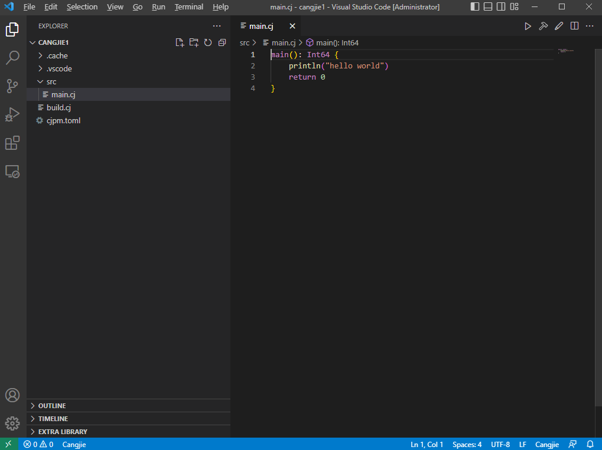

仓颉语言 IDE 插件使用指南
功能简介
仓颉语言提供了 Visual Studio Code（简称 VSCode） 插件，通过在 VSCode 中安装仓颉插件和仓颉 SDK，可以为开发者提供语言服务、工程管理、编译构建、调试服务、格式化、静态检查、代码覆盖率统计的功能。本文档介绍如何在 VSCode 中安装仓颉插件，以及如何使用插件提供的功能。
安装指导
请按照如下指导，根据实际情况下载并安装不同平台的 VSCode（建议使用 1.67 及更新版本的 VSCode）。
Windows 平台
- 下载 Windows 版本 VSCode 。
- 按照安装包导引，将 VSCode 安装在自定义路径中，然后启动。
Linux 平台
下载 Linux 版本 VSCode 。
macOS 平台
下载 macOS 版本 VSCode 。
本地安装
-
解压下载的压缩包（例如 VSCode-linux-x64）并存放到自定义位置。
-
使用如下命令给 code 增加可执行权限。
chmod 777 ./VSCode-linux-x64/code chmod 777 ./VSCode-linux-x64/bin/code -
使用如下命令启动 VSCode 。
./VSCode-linux-x64/bin/code
远程安装
-
使用 Remote - SSH 远程连接 VSCode 。
-
搜索 Remote - SSH，单击 ”安装“。

-
使用 Remote - SSH 进行远程工作，VSCode 会自动在远程主机上安装 server，linux_arm64 暂时只支持使用 Remote - SSH 的方式进行操作。
安装仓颉插件
首先，请在仓颉官方渠道（Gitee）根据平台架构下载相应安装包，交付内容为压缩包：Cangjie-vscode-version.tar.gz。
下载成功后，将其解压得到文件夹：Cangjie-vscode-version。该文件夹下有下列的内容
| 解压后生成文件与文件夹 | 文件功能 |
|---|---|
| .vsix 文件 | 插件端 |
VSCode 安装本地插件
按照下图所示操作，打开文件资源管理器对话框，找到要安装的插件.vsix，点击确定即可安装。
已经安装的插件可以在 INSTALLED 目录下查看
安装仓颉 SDK
仓颉 SDK 主要提供了 cjpm、cjc、cjfmt 等命令行工具，正确安装并配置仓颉 SDK 后，可使用工程管理、编译构建、格式化、静态检查和覆盖率统计等功能，开发者可以通过两种方式下载 SDK：
- 在官网下载 SDK 安装包，并在本地安装部署仓颉 SDK。
- 仓颉插件提供了仓颉 SDK 最新版本下载和更新功能，开发者可以在 VSCode 界面完成最新版本仓颉 SDK 的下载和本地环境部署。
离线手动安装和更新仓颉 SDK
开发者可以自行前往官网，手动下载需要的 SDK 版本，并在本地完成 SDK 路径配置。
Windows 平台
Windows 平台的 SDK 下载内容为：Cangjie-version-windows_x64.exe或Cangjie-version-windows_x64.zip。将其下载后内容放置在本地平台中。
Windows 版本的目录结构如下：
Linux 平台
linux_x64 平台的 SDK 下载内容为：Cangjie-version-linux_x64.tar.gz。
linux_aarch64 平台的 SDK 下载内容为：Cangjie-version-linux_aarch64.tar.gz。
将其下载后内容放置在本地环境中。linux 版本的目录结构如下：
macOS 平台
mac_x86_64 平台的 SDK 下载内容为：Cangjie-version-darwin_x64.tar.gz。
mac_aarch64 平台的 SDK 下载内容为：Cangjie-version-darwin_aarch64.tar.gz。
将其下载后内容放置在本地环境中。mac 版本的目录结构如下：
SDK 路径配置
安装完 Cangjie 插件后，即可配置 SDK 的路径。点击左下角齿轮图标，选择设置选项：

或直接右键点击插件，选择 Extension Settings，进入配置页面：

在搜索栏输入 cangjie, 然后选择侧边栏的 Cangjie Language Support 选项。
SDK 路径配置
-
找到 Cangjie Sdk: Option 选项，选择后端类型为 CJNative（默认是此选项）
-
找到 Cangjie Sdk Path: CJNative Backend 选项，输入 CJNative 后端 SDK 文件所在绝对路径
-
重启 VScode 生效

插件安装和更新仓颉 SDK
仓颉插件提供了仓颉 SDK 最新版本的下载与更新功能，开发者只需在 VSCode 界面即可完成仓颉 SDK 对应平台最新版本的下载更新与本地环境部署。
触发更新提示
当开发者进行如下操作时，仓颉插件会通过设置页面配置的仓颉 SDK 路径，获取对应 SDK 的版本信息，从而判断本地仓颉 SDK 是否为最新版本：
-
在 VSCode 界面打开仓颉源文件。
-
通过快捷键 "Ctrl + Shift + P"（mac 上快捷键为 "Command + Shift + P"） 调出 VSCode 的命令面板，然后选择 "Cangjie: Install/Update Latest SDK" 命令。

当本地 VSCode 没有配置仓颉 SDK 或者仓颉 SDK 非最新版本时，VSCode 界面右下角会弹出安装或更新提示。
安装仓颉 SDK
-
如果希望直接安装最新版本 SDK，可以在更新提示框点击 “ Install “ 按钮。

-
在弹出的窗口中选择下载和安装路径（注意路径不能存在名为
cangjie的文件夹）并单击 "Choose the SDK install path" 确定。
-
完成路径选择后，仓颉 SDK 开始下载：
-
下载完成后，会自动配置仓颉 SDK 的安装路径。
-
配置完成后，您可以使用最新版本的仓颉 SDK 进行本地开发。
使用限制
使用 VSCode 打开一个文件夹，将其中的仓颉源码分为两部分：一部分是顶层 src 目录下的仓颉源码，另一部分是非 src 目录下的仓颉源码。仓颉语言服务支持的目录结构如下：

限制一
语言服务插件仅为用户打开的文件夹下仓颉源码提供语言服务。以用户打开的文件夹为仓颉项目的根目录 PROJECTROOT（如果用户没有明确指定模块名称，默认将 PROJECTROOT 目录名称作为模块名，以方便用户导入 src 下的包），PROJECTROOT/src 为 src 下仓颉源码（支持语言服务）；除了 src 下的仓颉源码，PROJECTROOT 下的所有源码称为非 src 下仓颉源码（支持语言服务）；PROJECTROOT 之外的仓颉源码称为外部源码（暂不支持语言服务）。
限制二
非 src 下每个文件夹都作为一个包，包名的声明和包的编译方式与 src 下顶层包（即 default 包）处理方式保持一致。非 src 下的仓颉源码可以导入标准库的包以及 src 下用户自定义的包，非 src 下的包无法被其他包导入。
限制三
Linux 、 Windows 、 macOS 平台下均需要先设置 Cangjie SDK 路径。
语言服务
功能简介
语言服务工具为开发者提供如下功能：语法高亮、自动补全、定义跳转、查找引用、诊断报错、选中高亮、悬浮提示、签名帮助、重命名等。
使用说明
语法高亮介绍及使用
VSCode 打开 Cangjie 工程中的.cj 文件，即可看到效果，VSCode 不同主题显示的代码高亮颜色不同，如下所示的 dark+ 主题：关键字显示粉色，函数定义、引用符号为黄色，函数形参、变量符号为蓝色，注释为绿色等。

自动补全介绍及使用
VSCode 打开 Cangjie 工程中的.cj 文件，输入关键字、变量或 “.” 符号，在光标右侧提示候选内容，如下所示，可以用上下方向键快速选择想要的内容（注：需要切换为系统默认输入法），回车补全。
对于带参数的函数或者泛型提供模块化补齐，即当函数有参数或者带泛型的时候，选择函数补齐项之后会出现参数格式化补齐，如下图，填充数值之后按 tab 可以切换到下一个参数补齐直至模块化补齐结束，或者按 Esc 可以提前退出除当前选中模块外，其余模块的模块化补齐。
定义跳转介绍及使用
VSCode 打开 Cangjie 工程中的.cj 文件，鼠标悬停在目标上方 Ctrl + 单击鼠标左键触发定义跳转；或使用鼠标右键单击目标符号，选择 “Go to Definition” 执行定义跳转；或快捷键 F12 执行定义跳转，光标跳到定义处符号左端。
注意事项
- 在符号使用的地方使用定义跳转会跳转到符号定义处，支持跨文件跳转
- 在符号定义处使用定义跳转，如果此符号没被引用过，光标会跳转到符号左端
- 如果符号在其他地方被引用，会触发查找引用
跨语言跳转介绍和使用
语言服务插件支持 Cangjie 语言到 C 语言的跳转功能，VSCode 打开 Cangjie 工程中的.cj 文件，鼠标悬停在 Cangjie 互操作函数上方 Ctrl + 单击鼠标左键触发定义跳转；或使用鼠标右键单击目标符号，选择 “Go to Definition” 执行定义跳转；或快捷键 F12 执行定义跳转，光标跳到 C 语言定义处符号左端。
前置条件
- 本地安装华为自研 C++ 插件；
- 在 Cangjie 插件上设置需要跳转的 C 语言源码存放目录；
- 在当前工程下创建 build 文件夹，存放 compile_commands.json 文件 (该文件可通过 cmake 命令生成) 用于创建指定文件夹的索引文件。
跳转效果
foreign 函数会在用户设置的目录下查找对应的 C 语言函数，若找到则跳转至 C 源码的函数位置；除上述场景外均保持插件原有的定义跳转。
查找引用介绍及使用
VSCode 打开 Cangjie 工程中的.cj 文件，使用鼠标右键单击目标符号，选择 “Find All References” 执行符号引用预览，单击预览条目，可以跳转到对应引用处。

诊断报错介绍及使用
VSCode 打开 Cangjie 工程中的.cj 文件，当源码文件出现不符合 Cangjie 语法或语义规则的代码时，会在相关代码段出现红色波浪下划线，如下图所示，当鼠标悬停在上面，可以提示相应的报错信息，修改正确后，诊断报错自行消失。
选中高亮介绍及使用
VSCode 打开 Cangjie 工程中的.cj 文件，光标定位在一个变量或函数名处，当前文件中该变量的声明处以及其使用处都会高亮显示。
悬浮提示介绍及使用
VSCode 打开 Cangjie 工程中的.cj 文件，光标悬浮在变量处，可以提示出类型信息；悬浮在函数名处，可以提示出函数原型。

定义搜索介绍及使用
VSCode 打开 Cangjie 工程中的任意.cj 文件，按住Ctrl + T 后会出现搜索框，输入想要搜索的符号定义名，会显示出符合条件的搜索结果，单击搜索结果的条目，可以跳转到定义的对应位置处。
目前支持搜索的定义类型如下表格：
| class | interface | enum | struct |
| typealias | toplevel 的函数 | toplevel 的变量 | prop |
| enum 构造器 | 成员函数 | 成员变量 |
重命名介绍及使用
VSCode 打开 Cangjie 工程中的.cj 文件，光标定位在想要修改的用户自定义编写名称上，右键选择 Rename Symbol 或者快捷键 F2 方式打开重命名编辑框。

编辑完毕回车完成重命名的实现。
目前重命名支持的用户自定义类型如下：
| class 类名称 | struct 结构体名称 | interface 接口名称 | enum 枚举名称 | func 函数名称 |
| type 别名名称 | <T>泛型名称 | 变量名称 | 自定义宏名称 |
大纲视图显示介绍及使用
VSCode 打开 Cangjie 工程中的任意.cj 文件，在 OUTLINE 视图中显示当前文件的符号，目前支持两层结构的显示（第一层主要为 toplevel 中定义的声明，第二层主要为构造器及成员）。

目前支持大纲视图显示的符号类型如下表格：
| class | interface | enum | struct |
| typealias | toplevel 的函数 | toplevel 的变量 | prop |
| enum 构造器 | 成员函数 | 成员变量 |
面包屑导航介绍及使用
VSCode 打开 Cangjie 工程中的任意.cj 文件，在面包屑导航中显示某个符号当前所处的位置以及该符号在整个工程中的位置路径。
目前支持面包屑导航的符号类型如下表格：
| class | interface | enum | struct |
| typealias | toplevel 的函数 | toplevel 的变量 | prop |
| enum 构造器 | 成员函数 | 成员变量 |
签名帮助介绍及使用
VSCode 在输入左括号和逗号时会触发签名帮助，触发后只要还在函数参数范围内提示框会一直随光标移动（可与补全共存），如下图，会给用户提供当前函数参数信息，以及高亮当前函数位置参数帮助用户补充参数。

显示类型层次结构介绍及使用
VSCode 打开 Cangjie 工程中的 .cj 文件，光标定位在 class/interface/enum/struct 的名字上，右键选择 Show Type Hierarchy ，在左侧就会显示该类型层次结构。
点击下拉框可以继续显示，
在箭头所示位置可以在显示子类和父类之间切换。

调用类型层次结构介绍及使用
VSCode 打开 Cangjie 工程中的 .cj 文件，光标定位在函数的名字上，右键选择 Show Call Hierarchy ，在左侧就会显示该函数的调用类型层次结构。

点击下拉框可以继续显示
通过点击标识位置可以在显示调用函数和被调用函数之间切换。

工程管理
工程目录：
Project_name：用户输入的名称
│ └── src：代码目录
│ ├── main.cj：源码文件
│ ├── cjpm.toml：默认的 cjpm.toml 配置文件
通过 VSCode 命令面板创建仓颉工程
在 VSCode 中按 "F1" 或者 "Ctrl + Shift + P"（mac 上快捷键为 "Command + Shift + P"） 打开命令面板，然后按照以下步骤创建仓颉工程：
第一步：选择创建 Cangjie 工程命令
第二步：选择 Cangjie 后端

第二步：选择 Cangjie 工程模板

第三步：选择工程路径
第四步：输入工程名称
第五步：创建完成并打开

通过可视化界面创建仓颉工程
第一步：打开命令面板选择可视化创建 Cangjie 工程命令
第二步：打开可视化创建 Cangjie 工程界面

第三步：选择工程类型
第四步：点击选择工程路径
第五步：输入工程名称

第六步：点击 Confirm 创建工程
编译构建
注：VSCode 中可视化方式提供的仓颉功能编译构建能力依赖 cjpm 工具，该工具要求打开的仓颉工程的模块内必须包含规范的 cjpm.toml 文件。若没有该文件仍想执行工程的编译构建，可在终端使用 cjc 命令。
在 VSCode 中提供四种方式来实现 Cangjie 工程的编译构建方式。
编译构建方式
在命令面板执行命令
打开命令面板，通过分类词Cangjie来快速找到如下编译相关命令：
-
Parallelled Build并行编译
执行并行编译后，在工程文件夹下会生成
target目录，target目录下有一个release文件夹，release文件夹下包含三个目录：.build-logs目录、bin目录、工程名同名的目录。bin目录下存放可执行文件（可执行文件只有在cjpm.toml的output-type为executable时才会生成），工程名同名目录下存放编译的中间产物。在 output Panel 上会打印编译成功与否
-
Build With Verbose编译并展示编译日志该编译参数除了执行编译外，还会打印编译日志
-
Build With Debug可生成 debug 版本的目标文件该命令的编译结果中带有 debug 信息，供调试使用
-
Build With Coverage可生成覆盖率信息该命令在编译结果中带有覆盖率的信息
-
Build With Alias编译并指定输出可执行文件的名称执行该命令，按下回车后，会弹出一个输入栏，需要用户为工程的编译结果赋予一个新的名字。该命令只对
cjpm.toml的output-type为executable时有效。如输入的是hello，则编译后的二进制文件如下：
-
Build With Increment增量编译用来指定增量编译
-
Build With CustomizedOption按条件透传cjpm.toml中的命令。
使用该选项需要先在 cjpm.toml 中配置
customized-option字段。然后在命令面板输入Build With CustomizedOption,回车后可以选择需要的参数，参数可多选，选择后回车即可。
若没有在 cjpm.toml 中配置
customized-option字段，并执行了该条命令，插件会提示用户先配置改字段 -
Build With TargetDir编译并在指定路径生成编译产物选择该命令执行后，可指定编译产物的输出路径，默认不作输入操作则以 cjpm.toml 中的
target-dir字段为路径。当输入的编译产物路径与 cjpm.toml 中的
target-dir字段不同时，会弹出提示是否覆盖 cjpm.toml 中的target-dir字段，若选择 Yes 覆盖，则会将 cjpm.toml 中target-dir字段覆盖成输入的值。该执行命令执行成功后，会在指定的路径下生成编译产物。
-
Build With Jobs执行编译之前自定义最大并发度支持通过执行该命令在编译之前自定义最大并发度，输入参数为任意数字，设置范围为 (0, cpu 核数 * 2]。
当在输入框输入非数字时，会终止操作，并提示用户输入数字内容：Invaild input! The input should be number.
当在输入框输入的范围超出所支持的范围 (0, cpu 核数 * 2] 时，会默认采用 cpu 核数，并提示超出可选范围的 warning 信息。
-
Build With CodeCheck执行编译的时候进行 CodeCheck 静态代码检查执行该命令编译工程时，会对当前工程进行 CodeCheck 静态代码检查，如果检查到【要求】级别的代码规范违规，则编译失败，检查到【建议】级别的违规仅告警，正常完成编译。
-
Build With MultiParameter多参数编译仓颉工程的编译可以叠加多个参数，在命令面板搜索到
Build With MultiParameter命令后，选择需要叠加的参数，其中--target 参数会根据 cjpm.toml 中的cross-compile-configuration字段的设置来决定是否显示，如果用户没有配置cross-compile-configuration的内容，则--target参数选项会隐藏；--<customized-option>参数会根据 cjpm.toml 中的customized-option字段的设置来决定是否显示，如果用户没有配置customized-option的内容，则--参数选项会隐藏。 将用户想叠加的参数勾选，然后按回车键或者点击 ok 按钮。用户也可点击界面中的向左箭头，重新选择编译参数
如果叠加的参数中选择了
cjpm build -o，那么需要用户输入一个别名字符串然后按回车键执行叠加命令操作
如果叠加参数中选择了
cjpm build --target=<name>,那么用户可以选择一个想要交叉编译的平台如果叠加参数中选择了
cjpm build --<customized-option>,那么用户可以选择透传参数
叠加命令的编译结果就是这些命令分别执行的总和。
-
Update Cjpm.toml更新 cjpm.lock 文件在修改完 cjpm.toml 文件后需要执行该命令，更新 cjpm.lock 文件。如果是通过 UI 界面修改的 cjpm.toml 文件的话，用户不需要手动执行该操作
-
Execute Test File用于编译单元测试产物并执行对应的单元测试用例，并直接打印测试结果 -
Test With NoRun用于编译对应测试产物 -
Test With SkipBuild测试产物存在的前提下，用于执行对应测试产物 -
Test With Jobs执行单元测试之前自定义最大并发度，操作与Build With Jobs相同 -
Test With MultiParameter多参数执行仓颉工程的单元测试在选择该条命令后，首先输入指定待测试的包路径，若不需要指定，则直接按 Enter 键

此步骤可通过输入多个包的路径并用空格分隔，可以实现多包并发单元测试
然后选择要叠加的参数

如果选择了
--filter=<value>参数，则还需要输入对应的过滤测试子集的表达式
输入过滤测试子集的表达式后便能执行 cjpm test 的完整命令。执行结果会在 output 面板输出
若是在 cjpm.toml 中配置了
cross-compile-configuration和customized-option则可选择的参数会有--target=<name>和--<customized-option>
如果选择了
--target=<name>参数，则还需要选择对应的平台
--target暂时只支持在 SUSE 平台下选择aarch64-hm-gnu使用如果选择了
--<customized-option>参数，则还需要选择条件选项
-
Clean Build Result清除编译结果（工程目录下的 build 目录） -
Check Circular Dependencies检测文件依赖 -
Edit Configuration (UI)打开 UI 配置界面
在终端进行执行编译构建命令
提供用户在 VSCode 的终端面板直接使用编译构建命令（cjpm）对仓颉工程进行编译构建。但需要用户做如下操作：
关闭新建的工程，重新打开 VSCode（reload 不行）
然后可以在终端执行 cjpm 的操作了
点击运行按钮运行工程
用户可以点击 cj 文件编辑区的运行按钮来运行整个仓颉工程

若整个工程中配置的output-type为executable时会在终端面板打印运行结果，否则只会显示编译的结果。
点击运行按钮执行的编译过程是结合当前的 cjpm.toml 和 cjpm_build_args.json 的配置来进行的
点击锤子按钮编译工程
用户可以点击 cj 文件编辑区的锤子按钮编译整个仓颉工程

点击锤子按钮执行的编译过程与运行按钮一致，也是结合当前的 cjpm.toml 和 cjpm_build_args.json 的配置来进行的；不同的是若整个工程中配置的output-type为executable，运行按钮在编译完成后再运行整个工程，而锤子按钮只会编译工程，无后续运行动作。
可视化配置编译构建参数
在编译构建的过程中需要配置工程目录中的 toml 和 json 文件，cjpm.toml 和 cjpm_build_args.json 对这两个文件，可以直接修改 toml 和 json 文件本身，也可以点击编辑按钮或者在命令面板执行Edit Configuration (UI)命令打开可视化编辑的 UI 界面。
编译构建参数的 UI 界面如下：

左边有两个的蓝色的链接，点击后可跳转到对应的 toml 或者 json 文件。
右边的上半部分是对工程文件中.vscode目录下的 cjpm_build_args.json 的配置，通过复选框或者输入框的形式确定编译要使用的参数，修改后会同步到 cjpm_build_args.json 文件中。
右边的下半部分是对工程中的 cjpm.toml 文件的配置，对于输入框形式的配置，用户输入内容且光标不在输入框后便生效到 cjpm.toml 文件中。
注意：
当仓颉工程中的 cjpm.toml 文件和参数配置界面同时在 VSCode 的编辑区显示时（如下图），对 toml 文件的修改不会同步到 UI 界面上。
对于构建参数cross-compile-configuration,可以通过点击Add Configuration 按钮添加选项

然后在 key 和 compile-option 处填写对应的内容，点击红色圆圈圈出来的对钩按钮（也称为提交按钮）与 cjpm.toml 保持同步，点击提交按钮后，该按钮会隐藏，若用户再次修改某个字段的内容，直接点击该字段进行修改，修改完后按回车键便可以与 cjpm.toml 保持同步；若想删除该条配置，用户只需点击该条选项的叉号按钮。
添加的配置在不填写第一个字段key就直接回车或者按提交按钮，会提醒用户必须要填写第一个字段，该场景下提交的内容不会同步到 cjpm.toml 中。在 UI 界面目前不会直接删除该条配置，用户刷新 UI 界面后会自动删除，内容与 cjpm.toml 保持一致。package-configuration和cross-compile-configuration类似，如下显示为package-configuration新增配置时第一个字段为空的场景。
对于package-configuration参数，其添加和修改方式与cross-compile-configuration大致一致，其中output-type字段为下拉框选项，其可选的类型有 executable、static、dynamic、null。新添加的配置，该字段被初始化为 null，用户可以根据自己的需要选择。当选择为 null 时，该字段同步到 cjpm.toml 后会删除该字段。
注意：
在 UI 界面配置 cjpm.toml 的内容时，只有对于
customized-option参数中配置的--cfg 中路径中的=需要转义，其他不需要添加转义符号，但直接在 cjpm.toml 中填写时，需要加转义符号。如在给 package-configuration 字段的 p1 配置 compile-option 时，在 UI 界面对--link-options 设置内容时只需要加引号即可，即--link-options="-rpath=xxx"，而在 toml 文件中，需要填写--link-options=\"-rpath=xxx\"。在 UI 界面对customized-option参数配置的--cfg 路径中包含=时，=需要转义，即--cfg="D:/projects/cang\=jie"，而在 toml 文件中，需要填写--cfg=\"D:/projects/cang\\=jie\"。
对于customized-option参数，其添加修改方式与cross-compile-configuration一致。
注意：
customized-option 的条件不能设置内置的条件（@When[os == "Linux"] 不能作为 customized-option 的条件，即"cfg1" : "--cfg ="os=Linux""是不允许的），只能添加用户自定义条件。具体可以参考 Cangjie > Language Guide 文档的
条件编译章节。
三方库便捷导入
三方库导入方式
注 ：三方库便捷导入的方式只适用于当前打开的仓颉工程的主 module，其他子 module 想要使用这种方式导入外部库的话，可以单独以工程的方式打开使用
在仓颉工程中，可以导入外部的三方库，且可以在 cjpm.toml 中进行配置，他们分别是
dependencies： 当前仓颉模块依赖项目，里面配置了当前构建所需要的其它模块的信息，包含版本号、路径。这两个选项必须全部配置且不为空，否则会执行失败并报错。在使用过程中，优先使用此方式进行项目依赖导入。
dev-dependencies: 使用方式与 dependencies 保持一致，具有与 dependencies 字段相同的格式。它用于指定仅在开发过程中使用的依赖项，而不是构建主项目所需的依赖项，例如仅在测试中使用的依赖项。如果开发者是库作者，则应将此字段用于此库的下游用户不需要使用的依赖项。
bin-dependencies ：非特殊需求场景下，建议使用 dependencies的方式导入依赖。目前插件仅支持本地的 bin-dependencies 配置。
当前仓颉模块依赖的已编译好的 package。其有两种导入形式。以导入下述的 pro0 模块和 pro1 模块的三个包来举例说明。
├── test
│ └── pro0
│ ├── libpro0_xoo.so
│ └── xoo.cjo
│ ├── libpro0_yoo.so
│ └── yoo.cjo
│ └── pro1
│ ├── libpro1_zoo.so
│ └── zoo.cjo
└── src
└── main.cj
├── cjpm.toml
方式一，通过 package-option 导入：
[target]
[target.x86_64-w64-mingw32]
[target.x86_64-w64-mingw32.bin-dependencies]
[target.x86_64-w64-mingw32.bin-dependencies.package-option]
pro0_xoo = "./test/pro0/xoo.cjo"
pro0_yoo = "./test/pro0/yoo.cjo"
pro1_zoo = "./test/pro1/zoo.cjo"
这个选项是个 map 结构，pro0_xoo 名称作为 key，与 libpro0_xoo.so 相对应，前端文件 cjo 的路径作为 value，对应于该 cjo 的 .a 或 .so 需放置在相同路径下，且对应的 cjo 模块文件必须与模块名来源文件放置在相同的文件夹下，该文件夹下不能有任何其他的文件或者文件夹。
方式二，通过 path-option 导入：
[target]
[target.x86_64-w64-mingw32]
[target.x86_64-w64-mingw32.bin-dependencies]
path-option = ["./test/pro0", "./test/pro1"]
这个选项是个字符串数组结构，每个元素代表待导入的路径名称。cjpm 会自动导入该路径下所有符合规则的仓颉库包，这里的合规性是指库名称的格式为 模块名_包名。库名称不满足该规则的包只能通过 package-option 选项进行导入。
注意，如果同时通过 package-option 和 path-option 导入了相同的包，则 package-option 字段的优先级更高。
对应 IDE 上，其在导航栏视图中的呈现形式如下：

用户可以在其对应的导入方式子目录下导入或者工程需要的模块
其在 UI 界面的显示如下：
ffi：当前仓颉模块外部依赖 c 库。里面配置了依赖该库所需要的信息，包含名称、路径字段
为方便用户添加这几类外部库 ，在 IDE 的资源管理器的视图栏添加了CANGJIE LIBRARY栏
在工程初始化后，用户便可以通过点击分类栏的加号按钮添加对应的三方库。
也可以通过点击三方库上的减号删除对应的库

用户还可以点击视图栏的编辑按钮，打开三方库导入的可视化界面来导入或者删除三方库
以上的删除和添加操作都会同步到工程的 module.json 中。
三方库导入限制
- 项目中需要链接动态库（ c 库、仓颉库）时 ，运行时会加载不到，需自行设置 LD_LIBRARY_PATH ，执行下 export LD_LIBRARY_PATH=xxx:$LD_LIBRARY_PATH；主要的影响就是可以编译构建时会构建失败，需要用户自己设置 LD_LIBRARY_PATH。
- cjpm.toml 中修改的内容不会直接修改 treeView 和 UI 界面，需要用户更新一下，即重新点击 treeView 或者 UI 界面。
- treeView 中在库分类处添加外部库，且此时库分类目录是关闭状态，则添加后需要自己打开目录查看。
- UI 界面的字段暂不支持 hover 显示内容的功能。
- 在 UI 界面非用户添加的外部库，其路径与 cjpm.toml 保持一致。用户添加的库显示绝对路径。treeView 的路径均显示绝对路径。
调试服务
功能简介
仓颉编程语言提供了可视化调试服务，方便用户调试仓颉程序。该插件提供了如下功能：
- Launch: 启动调试进程
- Attach: 附加到已启动的进程
- 支持源码断点、函数断点、数据断点、汇编断点
- 支持源码内单步调试、运行到光标处、步入、步出、继续、暂停、重启、停止调试
- 支持汇编内单步、步入、步出
- 支持表达式求值
- 支持变量查看和修改
- 支持在调试控制台中查看变量
- 支持查看被调试程序的输出信息
- 支持反向调试
- 支持 unittest 的运行和调试
使用说明
说明：
- 如果您是第一次使用 VSCode 调试功能，可以查看 VSCode 调试服务使用手册 https://code.visualstudio.com/docs/editor/debugging 。
- 调试服务当前支持 Windows 和 Linux 版本的 VSCode 中安装使用。
- 受调试器限制，循环代码中存在条件断点时，执行 PAUSE 操作可能导致后续调试无法进行。
- VARIABLES 视图修改变量时，不会触发存在依赖关系的变量的刷新。
- 调试服务依赖仓颉 SDK 包内 liblldb 动态库文件，请提前配置仓颉 SDK 路径。SDK 配置方式请参考本手册 ”安装说明“ 目录下 ”插件安装与环境配置“。
启动调试
Launch
说明：
创建仓颉工程请参考本手册 ”工程管理“ 模块介绍。
-
launch 模式仓颉工程调试
- 未创建 launch.json 文件时，点击 "Run and Debug" > "Cangjie(cjdb) Debug" 启动调试。
- 已创建 launch.json 文件时，在 launch.json 文件中点击 "Add Configuration..." > "Cangjie Debug (CJNative) : launch" > "Build And Debug Cangjie Project" 添加调试配置，选择添加的配置启动调试。
-
launch 模式单文件调试
针对单文件调试，可以选中需要调试的仓颉源文件，右键选择 “Cangjie: Build and Debug File” ，该操作会生成编译配置文件 task.json 和编译脚本，并且会根据 task.json 配置执行脚本，编译出可调试的二进制文件，然后启动调试。

-
launch 模式调试手动编译的可执行文件
- 使用 cjc 编译器或 cjpm 手动编译出可调试的二进制文件。
- 点击 "Run and Debug" > "Cangjie(cjdb) Debug" > "Cangjie (CJNative): launch" > "Choose Executable File Later" 启动调试。
-
launch debugMacro 模式仓颉工程调试宏展开后的代码
调试宏展开后的代码文件（
.marcocall为后缀的文件），此时宏对应的原文件无法调试。 -
launch 模式调试远程进程（支持 Linux 远程到 Linux）
launch 模式下调试远程进程时，调试服务会将本地编译的二进制文件推送到远程平台，然后调试远程平台的二进制文件。
- 在远程平台启动 lldb-server（lldb-server 建议使用 cjdb 自带 lldb-server，路径/cangjie/third_party/llvm/lldb/bin/lldb-server）,启动命令
/**/**/cangjie/third_party/llvm/lldb/bin/lldb-server p --listen "*:1234" --server - 在本地机器使用 cjc 编译器或 cjpm 手动编译出可调试的二进制文件。
- 单击 "Run and Debug" 按钮启动调试。
launch.json 配置示例
{ "name": "Cangjie Debug (cjdb): test", "program": "/**/**/test", "request": "launch", "type": "cangjieDebug", "externalConsole": false, "remote": true, "remoteCangjieSdkPath": "/**/**/cangjie", "remoteFilePath": "/**/**/test", "remoteAddress": "1.1.1.1:1234", "remotePlatform": "remote-linux" } - 在远程平台启动 lldb-server（lldb-server 建议使用 cjdb 自带 lldb-server，路径/cangjie/third_party/llvm/lldb/bin/lldb-server）,启动命令
-
配置属性：
属性 类型 描述 program string 被调试进程的全路径，该文件将推送到远程平台，例如：/home/cangjieProject/build/bin/main remote boolean 启动远程 launch 进程，remote 为 true remoteCangjieSdkPath string 远程平台仓颉 SDK 路径 remoteFilePath string 远程平台存放推送文件的全路径，请确保路径 /home/test/ 合法且存在， main为推送到远程的文件名，例如：/home/cangjieProject/build/bin/mainremoteAddress string 被调试进程所在的机器 IP 和 lldb-server 监听的端口号，数据格式：ip:port remotePlatform string 远程的平台，仅支持 remote-linux（远程 linux 平台） env object 为被调试程序设置运行时的环境变量，该配置将覆盖系统环境变量，如需在系统配置基础上追加配置，在配置项结尾增加 ${env:PATH}。例如："PATH":"/home/user/bin: ${env:PATH}", "LD_LIBRARY_PATH":"/home/user/bin:${env:LD_LIBRARY_PATH}"。
Attach
-
attach 模式调试本地进程
- 在 launch.json 文件中点击 "Add Configuration..." > "Cangjie Debug (CJNative) : attach" 添加调试配置，选择添加的配置启动调试
- 在弹出界面选择要调试的进程即可启动调试

-
attach 模式调试远程进程
- 在本地机器编译出可调试二进制文件并将该文件拷贝到远程机器。
- 在远程机器启动 lldb-server（lldb-server 建议使用 cjdb 自带 lldb-server，路径/cangjie/third_party/llvm/lldb/bin/lldb-server）,启动命令
/**/**/cangjie/third_party/llvm/lldb/bin/lldb-server p --listen "*:1234" --server - 在远程机器启动被调试的二进制文件
- 在本地机器配置 launch.json 文件，并启动调试
launch.json 配置属性：
{ "name": "Cangjie Debug (cjdb): test", "processId": "8888", "program": "/**/**/test", "request": "attach", "type": "cangjieDebug", "remote": true, "remoteAddress": "1.1.1.1:1234", "remotePlatform": "remote-linux" } -
配置属性：
属性 类型 描述 processId string 被调试进程的 pid（配置 pid 时优先 attach pid，未配置 pid 则 attach program） program string 被调试进程的全路径，例如：/home/cangjieProject/build/bin/main remote boolean attach 本机器进程，remote 为 false；若 attach 远程进程，将 remote 设置为 true remoteAddress string 远程调试时被调试进程所在的机器 IP 和 lldb-server 监听的端口号，数据格式：ip:port remotePlatform string 远程调试时远程的平台，仅支持 remote-linux（远程 linux 平台）
调试信息查看
当进程处于 stopped 状态时，可以在 VSCode 界面左侧查看断点、当前线程、堆栈信息和变量，并支持编辑断点和修改变量，您也可以在 Editor 窗口 将鼠标悬浮于变量名称上查看变量值。支持在TERMINAL窗口查看被调试程序的输出信息。
表达式求值
说明：
表达式暂不支持元组类型和基础 Collection 类型。
- 您可以在 WATCH 窗口添加按钮或空白处双击键入表达式。
- 您可以在 Debug Console 窗口键入表达式。
- 您可以在 Editor 窗口 双击选中变量，右键选择 Evaluate in Debug Console。
程序控制
- 您可以单击顶部调试工具栏上的图标控制程序，包括单步执行、步入、步出、继续、暂停、重启或停止程序。

- 您可以在鼠标光标处点击右键选择
运行到光标处。 - 您可以在源码视图右键选择
Open Disassembly View进入汇编视图。
调试控制台
说明：
cjdb 介绍请查看本手册内 ”仓颉语言命令行工具使用指南“ 目录下 ”仓颉语言调试工具使用指南“
执行 cjdb 命令
您可以在 “调试控制台” 中输入 cjdb 命令来调试程序，命令必须遵循以下格式：
命令必须以 -exec 开头，要执行的子命令必须是正确的 cjdb 命令。
使用 cjdb 命令 n 执行单步调试的示例如下：
-exec n
查看变量
您可以在 “调试控制台” 中输入变量名称查看变量值：
反向调试
说明：
- 反向调试基于记录重放，开启反向调试功能后，调试服务会记录用户正向调试的所有停止点（断点+单步），以及停止点的线程、堆栈、变量等调试信息。进入反向调试模式，支持查看历史记录点的调试信息。
配置
您可以通过点击左下角齿轮图标，选择设置选项，在搜索栏输入 cangjie，找到 Reverse Debug 选项，勾选 Enable reverse debug，开启程序调试历史停止点信息的自动记录，同时可以配置自动记录的线程个数、堆栈个数、变量作用域、复杂类型变量子变量的展开层数和子变量个数，配置修改后，需要重新启动仓颉调试。
工具栏
您可以单击顶部调试工具栏上的时钟图标进入反向调试模式，使用工具栏上正反向继续、正反向单步控制程序，查看历史记录的线程、堆栈、变量信息，如下图：

您可以单击顶部调试工具栏上的方块图标退出反向调试模式，调试会回到正向调试的最后停止点，如下图：

反向断点
说明：
- 反向断点是一种特殊的源码断点（Log Point），正向调试过程中不会停止，也不会输出自动生成的 Log Message（用于标记反向断点）。
- 在正向调试时，用户提前设置反向断点，调试服务后台会记录进程走过的反向断点的调试信息。
- 在进入反向调试模式时，反向断点会作为停止点（断点型），可以查看该断点处的线程堆栈变量等调试信息。
- 在进入反向调试模式时，不支持设置反向断点。
反向断点设置方式：
-
在仓颉源文件编辑器视图内右键选择
Cangjie: Add Reverse Breakpoint为光标所在行设置一个反向断点； -
在仓颉源文件上右键选择
Cangjie: Add Auto Reverse Breakpoints插件会分析该文件内函数的入口和出口位置并自动设置反向断点；
-
在文件夹上右键选择
Cangjie: Add Auto Reverse Breakpoints插件会分析该文件夹内仓颉源文件中的函数的入口和出口位置并自动设置反向断点。
时间线
说明：
- 时间线展示了反向调试模式下记录的所有停止点（断点+单步），通过时间线拖拽，可以查看历史停止点的信息。
时间线入口位于 VSCode 右下方区域，您可以在右下方的 Tab 标签行右键将时间线 Cangjie Debug Timeline 开启或隐藏，也可以在 View 菜单中选择 Open View 开启，如下图：

- 主时间线上有左右游标，您可以分别拖动左右游标选出某一段时间区域；在选中一段区域之后，鼠标放在选中区域上方时会变为手的形状，此时您可以左右拖动此区域；
- 将鼠标放在主时间线上，鼠标变为十字光标的形状，此时按住鼠标往前或往后拖动，您可以将鼠标滑过的区域设为新的时间区域；
- 您可以通过 Ctrl + 鼠标滚轮的方式，放大和缩小选中区域；
- 每条时间线标识一个仓颉线程或者系统线程；如下图：

您可以点击时间线上的记录点， editor 界面同步刷新（定位到源码的行），调试信息界面同步刷新（展示该记录点的线程、栈帧和变量）。
unittest 运行和调试
前置条件
模块的单元测试代码应采用如下结构，其中 xxx.cj 表示该包的源码，对应单元测试代码文件命名应以 _test.cj 结尾。具体单元测试代码的写法可参考标准库用户手册。
│ └── src
│ ├── koo
│ │ ├── koo.cj
│ │ └── koo_test.cj
│ ├── zoo
│ │ ├── zoo.cj
│ │ └── zoo_test.cj
│ ├── main.cj
│ └── main_test.cj
│ ├── cjpm.toml
使用方式
- 点击
@Test/@TestCase声明行上的 "run" 按钮，运行该单元测试类/单元测试 case； - 点击
@Test/@TestCase声明行上的 "debug" 按钮，调试该单元测试类/单元测试 case；

格式化
针对仓颉文件，在 VSCode 的代码编辑区右键选择 [Cangjie] Format 或者用快捷键 Ctrl+Alt+F 执行格式化命令，可以对当前仓颉文件进行格式化。如下图：
针对仓颉项目，支持在 VSCode 的资源管理器中选择文件或者文件夹右键执行 [Cangjie] Format 命令，对选择的文件或者文件夹进行格式化。如下图：
静态检查
IDE 中的静态检查功能基于静态检查工具 cjlint，该功能可以识别代码中不符合编程规范的问题，帮助开发者发现代码中的漏洞，写出满足 Clean Source 要求的仓颉代码。
说明：
静态检查目前只能检测工程目录 src 文件夹下的所有仓颉文件。
静态检查的入口有两处:
-
在 VSCode 的代码编辑区右键选择 [Cangjie] CodeCheck 或者用快捷键 Ctrl+Alt+C 执行静态检查命令 。如下图：
-
在 VSCode 的资源管理器处右键选择 [Cangjie] CodeCheck 执行静态检查命令。如下图：
执行静态检查命令后，如果有不符合编码规范的问题会展示在右侧的表格中，点击表格中的文件链接，可以跳转到问题代码所在文件的行列：
覆盖率统计
覆盖率统计功能用于生成仓颉语言程序的覆盖率报告。
覆盖率统计的入口有两处:
-
在 VSCode 的代码编辑区右键选择 [Cangjie] Coverage 或者用快捷键 Ctrl+Alt+G 执行生成当前仓颉文件覆盖率报告的命令。如下图：

-
在 VSCode 的资源管理器中选择文件或者文件夹右键执行 [Cangjie] Coverage 命令，对选择的文件或者文件夹生成覆盖率报告。如下图：

注意：当选择的文件夹中不含有仓颉文件时，将不会生成覆盖率报告。
在生成的覆盖率报告页面，点击文件名可以查看点击文件的覆盖率详情：
仓颉语言命令行工具使用指南
仓颉语言提供了一系列命令行工具供开发者使用。在成功安装仓颉工具链后，即可根据手册说明使用这些命令行工具。仓颉工具链安装说明详见入门指南。
命令行模式编译
功能简介
CJPM（Cangjie Package Manager） 是仓颉语言的官方包管理工具，用于管理、维护仓颉项目的模块系统，并且提供简易统一的编译入口，支持自定义编译命令。
使用说明
通过 cjpm -h 即可查看主界面，由几个板块组成，从上到下分别是： 当前命令说明、使用示例（Usage）、支持的可用命令（Available subcommands）、支持的配置项（Available options）、更多提示内容。
Cangjie Package Manager
Usage:
cjpm [subcommand] [option]
Available subcommands:
init Init a new cangjie module
check Check the dependencies
update Update cjpm.lock
tree Display the package dependencies in the source code
build Compile the current module
run Compile and run an executable product
test Unittest a local package or module
clean Clean up the target directory
install Install a cangjie binary
uninstall Uninstall a cangjie binary
Available options:
-h, --help help for cjpm
-v, --version version for cjpm
Use "cjpm [subcommand] --help" for more information about a command.
基本的使用操作命令如下所示：
cjpm build --help
cjpm 是主程序的名称， build 是当前执行的可用命令， --help 是当前可用命令可用的配置项（配置项通常有长和短两种写法，效果相同）。
成功执行后会显示如下结果：
Compile a local module and all of its dependencies.
Usage:
cjpm build [option]
Available options:
-h, --help help for build
-i, --incremental enable incremental compilation
-j, --jobs <N> the number of jobs to spawn in parallel during the build process
-V, --verbose enable verbose
-g enable compile debug version target
--coverage enable coverage
--cfg enable the customized option 'cfg'
-m, --member <value> specify a member module of the workspace
--target <value> generate code for the given target platform
--target-dir <value> specify target directory
-o, --output <value> specify product name when compiling an executable file
-l, --lint enable cjlint code check
--mock enable support of mocking classes in tests
--skip-script disable script 'build.cj'.
命令说明
init
init 用于初始化一个新的仓颉模块或者工作空间。初始化模块时会默认在当前文件夹创建 cjpm.toml 文件，并且新建 src 源码文件夹。如果该模块的产物为可执行类型，则会在 src 下生成默认的 main.cj 文件，并在编译后打印输出 hello world。初始化工作空间时仅会创建 cjpm.toml 文件，默认会扫描该路径下已有的仓颉模块并添加到 members 字段中。若已存在 cjpm.toml 文件，或源码文件夹内已存在 main.cj，则会跳过对应的文件创建步骤。
init 有多个可配置项：
--name <value>指定新建模块的root包名，不指定时默认为上一级子文件夹名称--path <value>指定新建模块的路径，不指定时默认为当前文件夹--type=<executable|static|dynamic>指定新建模块的产物类型，缺省时默认为executable--workspace新建一个工作空间配置文件，指定该选项时以上其它选项无效会自动忽略
例如：
输入: cjpm init
输出: cjpm init success
输入: cjpm init --name demo --path project
输出: cjpm init success
输入: cjpm init --type=static
输出: cjpm init success
check
check 命令用于检查项目中所需的依赖项，执行成功将会打印有效的包编译顺序。
check 有多个可配置项：
-m, --member <value>仅可在工作空间下使用，可用于指定单个模块作为检查入口--no-tests配置后，测试相关的依赖将不会被打印--skip-script配置后，将会跳过构建脚本的编译运行
例如：
输入: cjpm check
输出:
The valid serial compilation order is:
b.pkgA -> b
cjpm check success
输入: cjpm check
输出:
Error: cyclic dependency
b.B -> c.C
c.C -> d.D
d.D -> b.B
输出说明：上述输出中，b.B 代表以 b 为 root 包的模块中的一个名为 b.B 的子包
输入: cjpm check
输出:
Error: can not find the following dependencies
pro1.xoo
pro1.yoo
pro2.zoo
update
update 用于将 cjpm.toml 里的内容更新到 cjpm.lock。当 cjpm.lock 不存在时，将会生成该文件。cjpm.lock 文件记录着 git 依赖的版本号等元信息，用于下次构建使用。
update 有以下可配置项：
--skip-script配置后，将会跳过构建脚本的编译运行
输入: cjpm update
输出: cjpm update success
tree
tree 命令用于可视化地展示仓颉源码中的包依赖关系。
tree 有多个可配置项：
-p, --package <value>指定某个包为根节点，从而展示它的子依赖包，需要配置的值是包名--invert <value>指定某个包为根节点并反转依赖树，从而展示它被哪些包所依赖，需要配置的值是包名--depth <N>指定依赖树的最大深度，可选值是非负整数。指定该选项时，默认会以所有包作为根节点。其中，N 的值代表每个依赖树的子节点最大深度--target <value>将指定目标平台的依赖项加入分析，并展示依赖关系--no-tests排除test-dependencies字段的依赖项-V, --verbose增加包节点的详细信息，包括包名、版本号和包路径--skip-script配置后，将会跳过构建脚本的编译运行
输入: cjpm tree
输出:
|-- a
└── a.aoo
└── a.coo
└── a.boo
└── a.coo
|-- a.doo
└── a.coo
|-- a.eoo
cjpm tree success
输入: cjpm tree --depth 2 -p a
输出:
|-- a
└── a.aoo
└── a.coo
└── a.boo
└── a.coo
cjpm tree success
输入: cjpm tree --depth 0
输出:
|-- a
|-- a.eoo
|-- a.aoo
|-- a.boo
|-- a.doo
|-- a.coo
cjpm tree success
输入: cjpm tree --invert a.coo --verbose
输出:
|-- a.coo 1.2.0 （.../src/coo）
└── a.aoo 1.1.0 （.../src/aoo）
└── a 1.0.0 （.../src）
└── a.boo 1.1.0 （.../src/boo）
└── a 1.0.0 （.../src）
└── a.doo 1.3.0 （.../src/doo）
cjpm tree success
build
build 用于构建当前仓颉项目，执行该命令前会先检查依赖项，检查通过后调用 cjc 进行构建。
build 有多个可配置项：
-i, --incremental用于指定增量编译，默认情况下是全量编译-j, --jobs <N>用于指定并行编译的最大并发数，最终的最大并发数取N和2倍 CPU 核数的最小值-V, --verbose用于展示编译日志-g用于生成debug版本的输出产物--mock带有此选项的构建版本中的类可用于在测试中进行mock测试--coverage用于生成覆盖率信息，默认情况下不开启覆盖率功能--cfg指定后，能够透传cjpm.toml中的自定义cfg选项-m, --member <value>仅可在工作空间下使用，可用于指定单个模块作为编译入口--target-dir <value>用于指定输出产物的存放路径-o, --output <value>用于指定输出可执行文件的名称，默认名称为main（windows下则默认为main.exe）--target <value>指定后，可交叉编译代码到目标平台，cjpm.toml中的配置可参考target章节-l, --lint用于在编译时调用仓颉语言静态检查工具进行代码检查--skip-script配置后，将会跳过构建脚本的编译运行
注意：
-i, --incremental选项仅会开启cjpm包级别的增量编译。开发者可以在配置文件的compile-option字段自行透传--incremental-compile编译选项，从而开启cjc编译器提供的函数粒度增量功能。-i, --incremental选项目前仅支持基于源码的增量分析。如果导入的库内容有变更，需要开发者重新使用全量方式构建。
编译生成的中间文件默认会存放在 target 文件夹，而可执行文件会根据编译模式存放到 target/release/bin 或 target/debug/bin 文件夹。为了提供可复制的构建，此命令会创建 cjpm.lock 文件，该文件包含所有可传递依赖项的确切版本，这些依赖项将用于所有后续构建，需要更新该文件时请使用 update 命令。如果有必要保证每个项目参与者都有可复制的构建，那么此文件应提交到版本控制系统中。
例如：
输入: cjpm build -V
输出:
compile package module1.package1: cjc --import-path "target/release" --output-dir "target/release/module1" -p "src/package1" --output-type=staticlib -o libmodule1.package1.a
compile package module1: cjc --import-path "target/release" --output-dir "target/release/bin" -p "src" --output-type=exe -o main
cjpm build success
输入: cjpm build
输出: cjpm build success
cjpm build 配置 -l, --lint 选项时，会在编译期间调用仓颉语言静态检查工具 cjlint 进行代码检查。如果检查到【要求】级别的代码规范违规，则此次编译会失败，相应检查结果会输出至错误流；检查到【建议】级别的违规时仅会告警，并正常完成编译。cjlint 支持检查的代码规则列表及其级别详见 cjlint 用户手册。
run
run 用于运行当前项目构建出的二进制产物。
run 有多个可配置项：
--name <value>指定运行的二进制名称，不指定时默认为main，工作空间下的二进制产物默认存放在target/release/bin路径下--build-args <value>控制cjpm编译流程的参数--skip-build跳过编译流程，直接运行--run-args <value>透传参数给本次运行的二进制产物--target-dir <value>用于指定运行产物的存放路径-g用于运行debug版本的产物-V, --verbose用于展示运行日志--skip-script配置后，将会跳过构建脚本的编译运行
例如：
输入: cjpm run
输出: cjpm run success
输入: cjpm run -g // 此时会默认执行 cjpm build -i -g 命令
输出: cjpm run success
输入: cjpm run --build-args="-s -j16" --run-args="a b c" -V
输出: cjpm run success
test
test 用于执行仓颉文件的单元测试用例，并直接打印测试结果，编译产物默认存放在 target/release/unittest_bin 文件夹。单元测试用例代码的写法可参考《仓颉编程语言库 API》中 std.unittest 库的说明。
该命令可以指定待测试的单包路径（支持指定多个单包，形如 cjpm test path1 path2），不指定路径时默认执行模块级别的单元测试。test 执行前提是当前项目能够 build 编译成功。
模块的单元测试代码结构如下所示，其中 xxx.cj 存放该包的源码，xxx_test.cj 存放单元测试代码：
│ └── src
│ ├── koo
│ │ ├── koo.cj
│ │ └── koo_test.cj
│ ├── zoo
│ │ ├── zoo.cj
│ │ └── zoo_test.cj
│ ├── main.cj
│ └── main_test.cj
│ ├── cjpm.toml
多模块测试场景
输入: cjpm test
输出:
--------------------------------------------------------------------------------------------------
TM: test, TP: default, time elapsed: 177921 ns, RESULT:
TCS: TestM, time elapsed: 177921 ns, RESULT:
[ PASSED ] CASE: sayhi (177921 ns)
Summary: TOTAL: 1
PASSED: 1, SKIPPED: 0, ERROR: 0
FAILED: 0
--------------------------------------------------------------------------------------------------
TM: test, TP: koo, time elapsed: 134904 ns, RESULT:
TCS: TestK, time elapsed: 134904 ns, RESULT:
[ PASSED ] CASE: sayhi (134904 ns)
Summary: TOTAL: 1
PASSED: 1, SKIPPED: 0, ERROR: 0
FAILED: 0
--------------------------------------------------------------------------------------------------
TM: pro0, TP: zoo, time elapsed: 132013 ns, RESULT:
TCS: TestZ, time elapsed: 132013 ns, RESULT:
[ PASSED ] CASE: sayhi (132013 ns)
Summary: TOTAL: 1
PASSED: 1, SKIPPED: 0, ERROR: 0
FAILED: 0
--------------------------------------------------------------------------------------------------
Project tests finished, time elapsed: 444838 ns, RESULT:
TM: pro0, time elapsed: 132013 ns, RESULT:
PASSED:
TP: zoo, time elapsed: 132013 ns
TM: test, time elapsed: 312825 ns, RESULT:
PASSED:
TP: koo, time elapsed: 312825 ns
TP: default, time elapsed: 312825 ns
Summary: TOTAL: 3
PASSED: 3, SKIPPED: 0, ERROR: 0
FAILED: 0
--------------------------------------------------------------------------------------------------
cjpm test success
单包测试场景
输入: cjpm test src/koo
输出:
--------------------------------------------------------------------------------------------------
TM: test, TP: koo, time elapsed: 160133 ns, RESULT:
TCS: TestK, time elapsed: 160133 ns, RESULT:
[ PASSED ] CASE: sayhi (160133 ns)
Summary: TOTAL: 1
PASSED: 1, SKIPPED: 0, ERROR: 0
FAILED: 0
--------------------------------------------------------------------------------------------------
Project tests finished, time elapsed: 160133 ns, RESULT:
TM: test, time elapsed: 160133 ns, RESULT:
PASSED:
TP: koo, time elapsed: 160133 ns
Summary: TOTAL: 1
PASSED: 1, SKIPPED: 0, ERROR: 0
FAILED: 0
--------------------------------------------------------------------------------------------------
cjpm test success
多包测试场景
输入: cjpm test src/koo src
输出:
--------------------------------------------------------------------------------------------------
TM: test, TP: koo, time elapsed: 168204 ns, RESULT:
TCS: TestK, time elapsed: 168204 ns, RESULT:
[ PASSED ] CASE: sayhi (168204 ns)
Summary: TOTAL: 1
PASSED: 1, SKIPPED: 0, ERROR: 0
FAILED: 0
--------------------------------------------------------------------------------------------------
TM: test, TP: default, time elapsed: 171541 ns, RESULT:
TCS: TestM, time elapsed: 171541 ns, RESULT:
[ PASSED ] CASE: sayhi (171541 ns)
Summary: TOTAL: 1
PASSED: 1, SKIPPED: 0, ERROR: 0
FAILED: 0
--------------------------------------------------------------------------------------------------
Project tests finished, time elapsed: 339745 ns, RESULT:
TM: test, time elapsed: 339745 ns, RESULT:
PASSED:
TP: koo, time elapsed: 339745 ns
TP: default, time elapsed: 339745 ns
Summary: TOTAL: 2
PASSED: 2, SKIPPED: 0, ERROR: 0
FAILED: 0
--------------------------------------------------------------------------------------------------
cjpm test success
test 有多个可配置项：
--no-run用于仅编译单元测试产物--skip-build用于仅执行单元测试产物-j, --jobs <N>用于指定并行编译的最大并发数，最终的最大并发数取N和2倍 CPU 核数的最小值-V, --verbose配置项开启后，会输出单元测试的日志-g用于生成debug版本的单元测试产物，此时的产物存放在target/debug/unittest_bin文件夹--bench用于指定只执行@bench宏修饰用例的测试结果--target-dir <value>用于指定单侧产物的存放路径--coverage配合cjcov命令可以生成单元测试的覆盖率报告。使用cjpm test --coverage统计覆盖率时，源代码中的main不会再作为程序入口执行，因此会显示为未被覆盖。建议使用cjpm test之后，不再手写多余的main--cfg指定后，能够透传cjpm.toml中的自定义cfg选项-m, --member <value>仅可在工作空间下使用，可用于指定测试单个模块--target <value>指定后，可交叉编译生成目标平台的单元测试结果，cjpm.toml中的配置可参考target章节--filter <value>用于过滤测试的子集，value的形式如下所示：--filter=*匹配所有测试类--filter=*.*匹配所有测试类的所有测试用例（结果和*相同）--filter=*.*Test,*.*case*匹配所有测试类中以Test结尾的用例，或者所有测试类中名字中带有case的测试用例--filter=MyTest*.*Test,*.*case*,-*.*myTest匹配所有MyTest开头测试类中以Test结尾的用例，或者名字中带有case的用例，或者名字中不带有myTest的测试用例
--random-seed <N>用于指定随机种子的值--no-color关闭控制台颜色显示--timeout-each <value>value 的格式为%d[millis|s|m|h]，为每个测试用例指定默认的超时时间--parallel用于指定测试用例并行执行的方案，value的形式如下所示：<BOOL>可为true或false，指定为true时，测试类可被并行运行，并行进程个数将受运行系统上的 CPU 核数控制nCores指定了并行的测试进程个数应该等于可用的 CPU 核数NUMBER指定了并行的测试进程个数值。该数值应该为正整数NUMBERnCores指定了并行的测试进程个数值为可用的 CPU 核数的指定数值倍。该数值应该为正数（支持浮点数或整数）
--report-path <value>指定测试执行后的报告生成路径--report-format <value>指定报告输出格式，当前单元测试报告仅支持xml格式（可忽略大小写），使用其它值将会抛出异常, 性能测试报告仅支持csv和csv-raw格式--skip-script配置后，将会跳过构建脚本的编译运行
cjpm test 参数选项使用示例:
输入：
cjpm test src --coverage
cjcov --root=./ --html-details -o html_output
输出：cjpm test success
覆盖率生成：在 html_output 目录下会生成 html 文件，总的覆盖率报告文件名固定为 index.html
输入: cjpm test --bench
输出: cjpm test success
输入: cjpm test src --bench
输出: cjpm test success
输入: cjpm test src --filter=*
输出: cjpm test success
输入: cjpm test src --report-path=reports --report-format=xml
输出: cjpm test success
注意：
cjpm test会自动构建所有带有mock支持的包，因此在测试中，开发者可以对自定义的类或依赖源模块的类进行mock测试。为了能够从一些二进制依赖中mock类，应该通过cjpm build --mock来构建带有mock支持的类。 带有--bench选项的cjpm test并不包含完全的mock支持，以避免在基准测试中由于在编译器中的mock处理而增加的任何开销。 使用--bench选项时，如果使用mock，编译器不会报错，以便能够将常规测试和基准测试一起编译。但是要避免运行使用mock的基准测试，否则会抛出运行时异常。
install
install 用于安装仓颉项目，执行该命令前会先进行编译，然后将编译产物安装到指定路径，安装产物以仓颉项目名命名（windows 系统上会有 .exe 后缀）。install 安装的项目产物类型需要是 executable。
install 有多个可配置项：
-V, --verbose用于展示安装日志-g用于生成debug版本的安装产物--path <value>用于指定本地安装项目的路径，默认为当前路径下的项目--root <value>用于指定可执行文件的安装路径，不配置时linux/macOS系统下默认为$HOME/.cjpm，windows默认为%USERPROFILE%/.cjpm，配置时将会安装于value-m, --member <value>仅可在工作空间下使用，可用于指定单个模块作为编译入口以安装单一模块--target-dir <value>用于指定编译产物的存放路径--name <value>用于指定最终安装的产物名--git <value>用于指定git安装的项目url--branch <value>用于指定git安装的项目分支--tag <value>用于指定git安装的项目tag--commit <value>用于指定git安装的项目commit ID--list用于打印已安装产物列表--skip-build用于跳过编译阶段以直接安装产物，需要项目处于编译完成状态，且仅在本地安装场景下生效-j, --jobs <N>用于指定并行编译的最大并发数，最终的最大并发数取N和2倍 CPU 核数的最小值--cfg指定后，能够透传cjpm.toml中的自定义cfg选项--skip-script配置后，将会跳过待安装模块的构建脚本的编译运行
install 功能有如下注意事项：
install共有两种安装方式：安装本地项目（通过--path配置项目路径）和安装git项目（通过--git配置项目url）。这两种安装方式至多只能配置一种，否则install将报错。任意一种均未配置时，默认安装当前目录下的本地项目。install编译项目时，默认开启增量编译。git相关配置仅在配置--git后生效，否则会被忽略，包括--branch,--tag和--commit。当配置多个git相关配置时，仅会生效优先级更高的配置，优先级排序为--commit>--branch>--tag。- 若已存在同名可执行文件被安装，则原来的文件将被替换。
- 假设安装路径为
root（root为配置的安装路径，不配置则为默认路径），则可执行文件将被安装于root/bin。 - 若项目存在动态库依赖，可执行程序所需动态库会被安装到
root/libs，按程序名分隔为若干目录，开发者需要将对应目录加入相应路径（linux/macOS中为LD_LIBRARY_PATH，windows中为PATH）方可使用。 - 默认安装路径（
linux/macOS系统下默认为$HOME/.cjpm，windows默认为%USERPROFILE%/.cjpm）会在envsetup中被加入PATH。 install在安装git项目后，对应的编译产物目录会被清除。- 在待安装项目仅存在一个可执行文件产物时，指定
--name会将其更名后安装；若存在多个可执行文件产物，指定--name会仅安装对应名称的产物。 - 配置
--list时，install会打印已安装产物列表，此时除--root以外的所有配置项均会被忽略。配置--root后，--list会打印配置路径下已安装的产物列表，否则会打印默认路径下的列表。
例如：
cjpm install --path path/to/project # 从本地路径 path/to/project 中安装
cjpm install --git url # 从 git 对应地址安装
uninstall
uninstall 用于卸载仓颉项目，清除对应的可执行文件和依赖文件。
uninstall 需要配置参数 name，以卸载名为 name 的产物，配置多个 name 时会依次删除。uninstall 可以通过 --root <value> 指定卸载的可执行文件路径，不配置时 linux/macOS 系统下默认为 $HOME/.cjpm，windows 默认为 %USERPROFILE%/.cjpm，配置时将会卸载安装于 value/bin 的产物和安装于 value/libs 的依赖
clean
clean 用于清理构建过程中的临时产物（target 文件夹）。该命令支持通过短选项 -g 指定仅清理 debug 版本的产物。该命令支持通过长选项 --target-dir <value> 用于指定清理的产物存放路径，开发者需自身保证清理该目录行为的安全性。如果使用了 cjpm build --coverage 或者 cjpm test --coverage 功能，还会清除 cov_output 文件夹，以及当前目录下的 *.gcno 文件和 *.gcda 文件。同时，该命令也支持通过 --skip-script 配置跳过构建脚本的编译运行。
例如：
输入: cjpm clean
输出: cjpm clean success
输入: cjpm clean --target-dir temp
输出: cjpm clean success
注意：
在
windows平台上，在子进程执行完成后立即清理子进程的可执行文件或父目录可能会失败。如果遇到该问题，可以在一小段延迟后重新尝试clean命令。
模块配置文件说明
模块配置文件 cjpm.toml 用于配置一些基础信息、依赖项、编译选项等内容，cjpm 主要通过这个文件进行解析执行。其中，模块名可以在 cjpm.toml 中进行重命名，但是包名不能在 cjpm.toml 中进行重命名。
配置文件代码如下所示：
[package] # 单模块配置字段，与 workspace 字段不能同时存在
cjc-version = "0.49.1" # 所需 `cjc` 的最低版本要求，必须
name = "demo" # 模块名及模块 root 包名，必须
description = "nothing here" # 描述信息，非必须
version = "1.0.0" # 模块版本信息，必须
compile-option = "" # 额外编译命令选项，非必须
link-option = "" # 链接器透传选项，可透传安全编译命令，非必须
output-type = "executable" # 编译输出产物类型，必须
src-dir = "" # 指定源码存放路径，非必须
target-dir = "" # 指定产物存放路径，非必须
package-configuration = {} # 单包配置选项，非必须
[workspace] # 工作空间管理字段，与 package 字段不能同时存在
members = [] # 工作空间成员模块列表，必须
build-members = [] # 工作空间编译模块列表，需要是成员模块列表的子集，非必须
test-members = [] # 工作空间测试模块列表，需要是编译模块列表的子集，非必须
compile-option = "" # 应用于所有工作空间成员模块的额外编译命令选项，非必须
link-option = "" # 应用于所有工作空间成员模块的链接器透传选项，非必须
target-dir = "" # 指定产物存放路径，非必须
[dependencies] # 源码依赖配置项
coo = { git = "xxx"，branch = "dev" , version = "1.0.0"} # 导入 `git` 依赖，`version`字段可缺省
doo = { path = "./pro1" ,version = "1.0.0"} # 导入源码依赖，`version`字段可缺省
[test-dependencies] # 测试阶段的依赖配置项，格式同 dependencies
[ffi.c] # 导入 `c` 库依赖
clib1.path = "xxx"
[profile] # 命令剖面配置项
build = {}
test = {}
customized-option = {}
[target.x86_64-unknown-linux-gnu] # 后端和平台隔离配置项
compile-option = "value1" # 额外编译命令选项，适用于特定 target 的编译流程和指定该 target 作为交叉编译目标平台的编译流程，非必须
link-option = "value2" # 链接器透传选项，适用于特定 target 的编译流程和指定该 target 作为交叉编译目标平台的编译流程，非必须
[target.x86_64-w64-mingw32.dependencies] # 适用于对应 target 的源码依赖配置项，非必须
[target.x86_64-w64-mingw32.test-dependencies] # 适用于对应 target 的测试阶段依赖配置项，非必须
[target.x86_64-unknown-linux-gnu.bin-dependencies] # 仓颉二进制库依赖，适用于特定 target 的编译流程和指定该 target 作为交叉编译目标平台的编译流程，非必须
path-option = ["./test/pro0", "./test/pro1"]
[target.x86_64-unknown-linux-gnu.bin-dependencies.package-option]
"pro0.xoo" = "./test/pro0/pro0.xoo.cjo"
"pro0.yoo" = "./test/pro0/pro0.yoo.cjo"
"pro1.zoo" = "./test/pro1/pro1.zoo.cjo"
当以上字段在 cjpm.toml 中没有使用时，默认为空（对于路径，默认为配置文件所在的路径）。
"cjc-version"
仓颉编译器最低版本要求，必须和当前环境版本兼容才可以执行。一个合法的仓颉版本号是由三段数字组成，中间使用 . 隔开，每个数字均为自然数，且没有多余的前缀 0。例如：
0.49.1是一个合法的仓颉版本号；0.049.1不是一个合法的仓颉版本号，049中含有多余的前缀0；0.2e.1不是一个合法的仓颉版本号，2e不为自然数。
"name"
当前仓颉模块名称，同时也是模块 root 包名。
一个合法的仓颉模块名称必须是一个合法的标识符。标识符可由字母、数字、下划线组成，标识符的开头必须是字母，例如 cjDemo 或者 cj_demo_1。
"description"
当前仓颉模块描述信息，仅作说明用，不限制格式。
"version"
当前仓颉模块版本号，由模块所有者管理，主要供模块校验使用。模块版本号的格式同 cjc-version。
"compile-option"
传给 cjc 的额外编译选项。多模块编译时，每个模块设置的 compile-option 对该模块内的所有包生效。
例如：
compile-option = "-O1 -V"
这里填入的命令会在 build 执行时插入到编译命令中间，多个命令可以用空格隔开。可用的命令参考《仓颉编程语言开发指南》的编译选项章节内容。
"link-option"
传给链接器的编译选项，可用于透传安全编译命令，如下所示:
link-option = "-z noexecstack -z relro -z now --strip-all"
注意：
link-option中配置的命令在编译时只会自动透传给动态库和可执行产物对应的包。
"output-type"
编译输出产物的类型，包含可执行程序和库两种形式，相关的输入如下表格所示。如果想生成 cjpm.toml 时该字段自动填充为 static，可使用命令 cjpm init --type=static --name=modName，不指定类型时默认生成为 executable。只有主模块的该字段可以为 executable。
| 输入 | 说明 |
|---|---|
| "executable" | 可执行程序 |
| "static" | 静态库 |
| "dynamic" | 动态库 |
| 其它 | 报错 |
"src-dir"
该字段可以指定源码的存放路径，不指定时默认为 src 文件夹。
"target-dir"
该字段可以指定编译产物的存放路径，不指定时默认为 target 文件夹。若该字段不为空，执行 cjpm clean 时会删除该字段所指向的文件夹，开发者需自身保证清理该目录行为的安全性。
注意：
若在编译时同时指定了
--target-dir选项，则该选项的优先级会更高。
target-dir = "temp"
"package-configuration"
每个模块的单包可配置项。该选项是个 map 结构，需要配置的包名作为 key，单包配置信息作为 value。当前可配置的信息包含输出类型、透传命令选项、条件选项，这几个选项可缺省按需配置。如下所示，demo 模块中的 demo.aoo 包的输出类型会被指定为动态库类型，-g 命令会在编译时透传给 demo.aoo 包。
[package.package-configuration."demo.aoo"]
output-type = "dynamic"
compile-option = "-g"
如果在不同字段配置了相互兼容的编译选项，生成命令的优先级如下所示。
[package]
compile-option = "-O1"
[package.package-configuration.demo]
compile-option = "-O2"
# profile字段会在下文介绍
[package.profile.customized-option]
cfg1 = "-O0"
输入: cjpm build --cfg1 -V
输出: cjc --import-path build -O0 -O1 -O2 ...
通过配置这个字段，可以同时生成多个二进制产物（生成多个二进制产物时，-o, --output <value> 选项将会失效），示例如下：
源码结构的示例，模块名为 demo：
`-- src
|-- aoo
| `-- aoo.cj
|-- boo
| `-- boo.cj
|-- coo
| `-- coo.cj
`-- main.cj
配置方式的示例：
[package.package-configuration."demo.aoo"]
output-type = "executable"
[package.package-configuration."demo.boo"]
output-type = "executable"
多个二进制产物的示例：
❯ cjpm build
cjpm build success
❯ tree target/release/bin
target/release/bin
|-- demo.aoo
|-- demo.boo
`-- demo
"workspace"
该字段可管理多个模块作为一个工作空间，支持以下配置项：
members = ["aoo", "path/to/boo"]：列举包含在此工作空间的本地源码模块，支持绝对路径和相对路径。该字段的成员必须是一个模块，不允许是另一个工作空间build-members = []：本次编译的模块，不指定时默认编译该工作空间内的所有模块。该字段的成员必须被包含在members字段中test-members = []：本次测试的模块，不指定时默认单元测试该工作空间内的所有模块。该字段的成员必须被包含在build-members字段中compile-option = ""：工作空间的公共编译选项，非必须link-option = ""：工作空间的公共链接选项，非必须target-dir = ""：工作空间的产物存放路径，非必须，默认为target
工作空间内的公共配置项，对所有成员模块生效。例如：配置了 [dependencies] xoo = { path = "path_xoo" } 的源码依赖，则所有成员模块可以直接使用 xoo 模块，无需在每个子模块的 cjpm.toml 中再配置。
注意：
package字段用于配置模块的通用信息，不允许和workspace字段出现在同一个cjpm.toml中，除package外的其它字段均可在工作空间中使用。
工作空间目录举例：
root_path
│ └─ aoo
│ ├─ src
│ └─ cjpm.toml
│ └─ boo
│ ├─ src
│ └─ cjpm.toml
│ └─ coo
│ ├─ src
│ └─ cjpm.toml
└─ cjpm.toml
工作空间的配置文件使用举例：
[workspace]
members = ["aoo", "boo", "coo"]
build-members = ["aoo", "boo"]
test-members = ["aoo"]
compile-option = "-Woff all"
[dependencies]
xoo = { path = "path_xoo" }
[ffi.c]
abc = { path = "libs" }
"dependencies"
该字段通过源码方式导入依赖的其它仓颉模块，里面配置了当前构建所需要的其它模块的信息。目前，该字段支持本地路径依赖和远程 git 依赖。
要指定本地依赖项，请使用 path 字段，并且它必须包含有效的本地路径。例如，下面的两个子模块 pro0 和 pro1 和主模块的代码结构如下：
|-- pro0
| |-- cjpm.toml
| `-- src
| `-- zoo
| `-- zoo.cj
|-- pro1
| |-- cjpm.toml
| `-- src
| |-- xoo
| | `-- xoo.cj
| `-- yoo
| `-- yoo.cj
|-- cjpm.toml
`-- src
|-- aoo
| `-- aoo.cj
|-- boo
| `-- boo.cj
`-- main.cj
在主模块的 cjpm.toml 中进行如下配置后，即可在源码中使用 pro0 和 pro1 模块：
[dependencies]
pro0 = { path = "./pro0" }
pro1 = { path = "./pro1" }
要指定远程 git 依赖项，请使用 git 字段，并且它必须包含 git 支持的任何格式的有效 url。要配置 git 依赖关系，最多可以有一个 branch、tag 和 commitId 字段，这些字段允许分别选择特定的分支、标记或提交哈希，若配置多个此类字段则仅会生效优先级最高的配置，优先级顺序为 commitId > branch > tag。此外，还有可选的 version 字段，用于检查依赖项是否具有正确的版本，并且没有意外更新。例如，进行如下配置后，即可在源码中使用特定 git 仓库地址的 pro0 和 pro1 模块：
[dependencies]
pro0 = { git = "git://github.com/org/pro0.git", tag = "v1.0.0"}
pro1 = { git = "https://gitee.com/anotherorg/pro1", branch = "dev"}
在这种情况下， cjpm 将下载对应存储库的最新版本，并将当前 commit-hash 保存在 cjpm.lock 文件中。所有后续的 cjpm 调用都将使用保存的版本，直到使用 cjpm update。
通常需要一些身份验证才能访问 git 存储库。 cjpm 不要求提供所需的凭据，因此应使用现有的 git 身份验证支持。如果用于 git 的协议是 https ，则需要使用一些现有的 git 凭据帮助程序。在 windows 上，可在安装 git 时一起安装凭据帮助程序，默认使用。在 linux 上，请参阅 git-config 配置说明 ，了解有关设置凭据帮助程序的详细信息。如果协议是 ssh 或 git ，则应使用基于密钥的身份验证。如果密钥受密码短语保护，则开发者应确保 ssh-agent 正在运行，并且在使用 cjpm 之前通过 ssh-add 添加密钥。
dependencies 字段可以通过 output-type 属性指定编译产物类型，指定的类型可以与源码依赖自身的编译产物类型不一致，且仅能为 static 或者 dynamic， 如下所示：
[dependencies]
pro0 = { path = "./pro0", output-type = "static" }
pro1 = { git = "https://gitee.com/anotherorg/pro1", output-type = "dynamic" }
进行如上配置后，将会忽略 pro0 和 pro1 的 cjpm.toml 中的 output-type 配置，将这两个模块的产物分别编译成 static 和 dynamic 类型。
"test-dependencies"
具有与 dependencies 字段相同的格式。它用于指定仅在测试过程中使用的依赖项，而不是构建主项目所需的依赖项。模块开发者应将此字段用于此模块的下游用户不需要感知的依赖项。
test-dependencies 内的依赖仅可用于文件名形如 xxx_test.cj 的测试文件，在编译时这些依赖将不会被编译。test-dependencies 在 cjpm.toml 中的配置格式与 dependencies 相同。
"script-dependencies"
具有与 dependencies 字段相同的格式。它用于指定仅在编译构建脚本中使用的依赖项，而不是构建主项目所需的依赖项。构建脚本相关功能将在其他-构建脚本章节中详述。
"ffi.c"
当前仓颉模块外部依赖 c 库的配置。该字段配置了依赖该库所需要的信息，包含库名和路径。
开发者需要自行编出动态库或静态库放到设置的 path 下，可参考下面的例子。
仓颉调用外部 c 动态库的方法说明：
- 自行将相应的
hello.c文件编成.so库（在该文件路径执行clang -shared -fPIC hello.c -o libhello.so） - 修改该项目的
cjpm.toml文件，配置ffi.c字段，如下面的例子所示。其中，./src/是编出的libhello.so相对当前目录的地址，hello为库名。 - 执行
cjpm build，即可编译成功。
[ffi.c]
hello = { path = "./src/" }
"profile"
profile 作为一种命令剖面配置项，用于控制某个命令执行时的默认配置项。目前支持四种场景：build、test、run 和 customized-option。
"profile.build"
[profile.build]
lto = "full" # 是否开启 LTO （Link Time Optimization 链接时优化）优化编译模式，仅 linux 平台支持该功能。
incremental = true # 是否默认开启增量编译
编译流程的控制项，所有字段均可缺省，不配置时不生效，顶层模块设置的 profile.build 项才会生效。
lto 配置项的取值为 full 或 thin，对应 LTO 优化支持的两种编译模式：full LTO 将所有编译模块合并到一起，在全局上进行优化，这种方式可以获得最大的优化潜力，同时也需要更长的编译时间；thin LTO 在多模块上使用并行优化，同时默认支持链接时增量编译，编译时间比 full LTO 短，但是因为失去了更多的全局信息，所以优化效果不如 full LTO。
"profile.test"
[profile.test] # 使用举例
noColor = true
timeout-each = "4m"
randomSeed = 10
bench = true
reportPath = "reports"
reportFormat = "xml"
[profile.test.compilation-options]
verbose = true
no-run = false
lto = "thin"
mock = "on"
[profile.test.env]
MY_ENV = { value = "abc" }
cjHeapSize = { value = "32GB", splice-type = "replace" }
PATH = { value = "/usr/bin", splice-type = "prepend" }
测试配置支持指定编译和运行测试用例时的选项，所有字段均可缺省，不配置时不生效，顶层模块设置的 profile.test 项才会生效。选项列表与 cjpm test 提供的控制台执行选项一致。如果选项在配置文件和控制台中同时被配置，则控制台中的选项优先级高于配置文件中的选项。profile.test 支持的运行时选项：
bench指定用例按性能用例方式执行，值为true或falsefilter指定用例过滤器，参数值类型为字符串，格式与 test 命令说明中--filter的值格式一致timeout-each <value>value 的格式为%d[millis|s|m|h]，为每个测试用例指定默认的超时时间parallel指定测试用例并行执行的方案，value的形式如下所示：<BOOL>值为true或false，指定为true时，测试类可被并行运行，并行进程个数将受运行系统上的 CPU 核数控制nCores指定并行的测试进程个数应该等于可用的 CPU 核数NUMBER指定并行的测试进程个数值。该数值应该为正整数NUMBERnCores指定并行的测试进程个数值为可用的 CPU 核数的指定数值倍。该数值应该为正数（支持浮点数或整数）
option:<value>与@Configuration协同定义运行选项。例如，如下选项：randomSeed指定随机种子的值，参数值类型为正整数noColor指定执行结果在控制台中是否无颜色显示，值为true或falsereportPath指定测试执行后的报告生成路径（不能通过@Configuration配置）reportFormat指定报告输出格式，当前当前单元测试报告仅支持xml格式（可忽略大小写），使用其它值将会抛出异常（不能通过@Configuration配置）, 性能测试报告仅支持csv和csv-raw格式
compilation-options为支持的编译选项，其列表如下：verbose指定显示编译过程详细信息，参数值类型为BOOL, 即值可为true或falseno-run指定仅编译单元测试产物，参数值类型为BOOL, 即值可为true或falselto指定是否开启 LTO 优化编译模式，该值可为thin或full，windows 平台暂不支持该功能mock显式设置 mock 模式，可能的选项：on、off、runtime-error
env支持在test命令时运行可执行文件时配置临时环境变量，key值为需要配置的环境变量的名称，有如下配置项：value指定配置的环境变量值splice-type指定环境变量的拼接方式，非必填，不配置时默认为absent，共有以下四种取值：absent：该配置仅在环境内不存在同名环境变量时生效，若存在同名环境变量则忽略该配置replace：该配置会替代环境中已有的同名环境变量prepend：该配置会拼接在环境中已有的同名环境变量之前append：该配置会拼接在环境中已有的同名环境变量之后
"profile.run"
运行可执行文件时的选项，支持配置在 run 命令时运行可执行文件时的环境变量配置 env，配置方式同 profile.test.env。
"profile.customized-option"
[profile.customized-option]
cfg1 = "--cfg=\"feature1=lion, feature2=cat\""
cfg2 = "--cfg=\"feature1=tiger, feature2=dog\""
cfg3 = "-O2"
自定义透传给 cjc 的选项，通过 --cfg1 --cfg3 使能，每个模块设置的 customized-option 对该模块内的所有包生效。例如，执行 cjpm build --cfg1 --cfg3 命令时，透传给 cjc 的命令则为 --cfg="feature1=lion, feature2=cat" -O2。
注意：
这里的条件值必须是一个合法的标识符。
"target"
多后端、多平台隔离选项，用于配置不同后端、不同平台情况下的一系列不同配置项。target 配置方式如下：
[target.x86_64-unknown-linux-gnu] # linux 系统的配置项
compile-option = "value1" # 额外编译命令选项
link-option = "value2" # 链接器透传选项
[target.x86_64-unknown-linux-gnu.dependencies] # 源码依赖配置项
[target.x86_64-unknown-linux-gnu.test-dependencies] # 测试阶段依赖配置项
[target.x86_64-unknown-linux-gnu.bin-dependencies] # 仓颉二进制库依赖
path-option = ["./test/pro0", "./test/pro1"]
[target.x86_64-unknown-linux-gnu.bin-dependencies.package-option]
"pro0.xoo" = "./test/pro0/pro0.xoo.cjo"
"pro0.yoo" = "./test/pro0/pro0.yoo.cjo"
"pro1.zoo" = "./test/pro1/pro1.zoo.cjo"
[target.x86_64-w64-mingw32] # windows 系统的配置项
compile-option = "value3"
link-option = "value4"
[target.x86_64-unknown-linux-gnu.debug] # linux 系统的 debug 配置项
[target.x86_64-unknown-linux-gnu.debug.test-dependencies]
[target.x86_64-unknown-linux-gnu.release] # linux 系统的 release 配置项
[target.x86_64-unknown-linux-gnu.release.bin-dependencies]
开发者可以通过配置 target.target-name 字段为某个 target 添加一系列配置项。target 的名称可以在相应的仓颉环境下通过命令 cjc -v 获取，命令输出中的 Target 项目即为该环境对应的 target 名称。
可为特定 target 配置的专用配置项，将会适用于该 target 下的编译流程，同时也会适用于其他 target 指定该 target 作为目标平台的交叉编译流程。配置项列表如下：
compile-option：额外编译命令选项link-option：链接器透传选项dependencies：源码依赖配置项，结构同dependencies字段test-dependencies：测试阶段依赖配置项，结构同test-dependencies字段bin-dependencies：仓颉二进制库依赖，结构在下文中介绍compile-macros-for-target：交叉编译时的宏包控制项，该选项不支持区分下述的debug和release编译模式
开发者可以通过配置 target.target-name.debug 和 target.target-name.release 字段为该 target 额外配置在 debug 和 release 编译模式下特有的配置，可配置的配置项同上。配置于此类字段的配置项将仅应用于该 target 的对应编译模式。
"target.target-name[.debug/release].bin-dependencies"
该字段用于导入已编译好的、适用于指定 target 的仓颉库产物文件，以导入下述的 pro0 模块和 pro1 模块的三个包来举例说明。
注意：
非特殊需求场景，不建议使用该字段，请使用上文介绍的
dependencies字段导入模块源码。
├── test
│ └── pro0
│ ├── libpro0.xoo.so
│ └── pro0.xoo.cjo
│ ├── libpro0.yoo.so
│ └── pro0.yoo.cjo
│ └── pro1
│ ├── libpro1.zoo.so
│ └── pro1.zoo.cjo
└── src
└── main.cj
├── cjpm.toml
方式一，通过 package-option 导入：
[target.x86_64-unknown-linux-gnu.bin-dependencies.package-option]
"pro0.xoo" = "./test/pro0/pro0.xoo.cjo"
"pro0.yoo" = "./test/pro0/pro0.yoo.cjo"
"pro1.zoo" = "./test/pro1/pro1.zoo.cjo"
package-option 选项为 map 结构，pro0.xoo 名称作为 key (toml 配置文件中含有 . 的字符串作为整体时，需要用 "" 包含)，值为 libpro0.xoo.so 。前端文件 cjo 的路径作为 value，对应于该 cjo 的 .a 或 .so 需放置在相同路径下。
方式二，通过 path-option 导入：
[target.x86_64-unknown-linux-gnu.bin-dependencies]
path-option = ["./test/pro0", "./test/pro1"]
path-option 选项为字符串数组结构，每个元素代表待导入的路径名称。cjpm 会自动导入该路径下所有符合规则的仓颉库包，这里的合规性是指库名称的格式为 模块名.包名。库名称不满足该规则的包只能通过 package-option 选项进行导入。
注意：
如果同时通过
package-option和path-option导入了相同的包，则package-option字段的优先级更高。
其中，源码main.cj 调用 pro0.xoo、pro0.yoo、pro1.zoo 包的代码示例如下所示。
import pro0.xoo.*
import pro0.yoo.*
import pro1.zoo.*
main(): Int64 {
var res = x + y + z // x, y, z 分别为 pro0.xoo, pro0.yoo, pro1.zoo 中定义的值
println(res)
return 0
}
"target.target-name.compile-macros-for-target"
该字段用于配置宏包的交叉编译方式，有如下三种情况：
方式一：宏包在交叉编译时默认仅编译本地平台的产物，不编译目标平台的产物，对该模块内的所有宏包生效
[target.目标平台]
compile-macros-for-target = ""
方式二：在交叉编译时同时编译本地平台和目标平台的产物，对该模块内的所有宏包生效
[target.目标平台]
compile-macros-for-target = "all" # 配置项为字符串形式，可选值必须为 all
方式三：指定该模块内的某些宏包在交叉编译时同时编译本地平台和目标平台的产物，其它未指定的宏包采取方式一的默认模式
[target.目标平台]
compile-macros-for-target = ["pkg1", "pkg2"] # 配置项为字符串数字形式，可选值是宏包名
"target" 相关字段合并规则
target 配置项中的内容可能同时存在于 cjpm.toml 的其他选项中，例如 compile-option 字段在 package 字段中也可以存在，区别在于 package 中的该字段会应用于全部 target。cjpm 对这些重复的字段会按照特定的方式将所有可应用的配置合并。以 x86_64-unknown-linux-gnu 的 debug 编译模式为例，有如下的 target 配置：
[package]
compile-option = "compile-0"
link-option = "link-0"
[dependencies]
dep0 = { path = "./dep0" }
[test-dependencies]
devDep0 = { path = "./devDep0" }
[target.x86_64-unknown-linux-gnu]
compile-option = "compile-1"
link-option = "link-1"
[target.x86_64-unknown-linux-gnu.dependencies]
dep1 = { path = "./dep1" }
[target.x86_64-unknown-linux-gnu.test-dependencies]
devDep1 = { path = "./devDep1" }
[target.x86_64-unknown-linux-gnu.bin-dependencies]
path-option = ["./test/pro1"]
[target.x86_64-unknown-linux-gnu.bin-dependencies.package-option]
"pro1.xoo" = "./test/pro1/pro1.xoo.cjo"
[target.x86_64-unknown-linux-gnu.debug]
compile-option = "compile-2"
link-option = "link-2"
[target.x86_64-unknown-linux-gnu.debug.dependencies]
dep2 = { path = "./dep2" }
[target.x86_64-unknown-linux-gnu.debug.test-dependencies]
devDep2 = { path = "./devDep2" }
[target.x86_64-unknown-linux-gnu.debug.bin-dependencies]
path-option = ["./test/pro2"]
[target.x86_64-unknown-linux-gnu.debug.bin-dependencies.package-option]
"pro2.xoo" = "./test/pro2/pro2.xoo.cjo"
target 配置项在与 cjpm.toml 公共配置项或者相同 target 的其他级别的配置项共存时，按照如下的优先级合并：
debug/release模式下对应target的配置debug/release无关的对应target的配置- 公共配置项
以上述的 target 配置为例，target 各个配置项按照以下规则合并：
compile-option：将所有适用的同名配置项按照优先级拼接，优先级更高的配置拼接在后方。在本例中，在x86_64-unknown-linux-gnu的debug编译模式下，最终生效的compile-option值为compile-0 compile-1 compile-2，在release编译模式下为compile-0 compile-1，在其他target中为compile-0。link-option：同上。dependencies：源码依赖将被直接合并，如果其中存在依赖冲突则会报错。在本例中，在x86_64-unknown-linux-gnu的debug编译模式下，最终生效的dependencies为dep0,dep1和dep2，而在release编译模式下仅有dep0和dep1生效。在其他target中，仅有dep0生效。test-dependencies：同上。bin-dependencies：二进制依赖将按照优先级合并，如果有冲突则仅有优先级更高的依赖将会被加入，同优先级的配置先加入package-option配置。在本例中，在x86_64-unknown-linux-gnu的debug编译模式下，./test/pro1和./test/pro2内的二进制依赖将被加入，而在release模式下仅会加入./test/pro1。由于bin-dependencies没有公共配置，因此在其他target中不会有二进制依赖生效。
在本例的交叉编译场景中，若在其他平台中指定了 x86_64-unknown-linux-gnu 作为目标 target，则 target.x86_64-unknown-linux-gnu 的配置也会按照上述规则与公共配置项合并并应用；如果处于 debug 编译模式，也将应用 target.x86_64-unknown-linux-gnu.debug 的配置项。
配置和缓存文件夹
cjpm 通过 git 下载文件的存储路径可以通过 CJPM_CONFIG 环境变量指定。如果未指定，则 linux 上的默认位置为 $HOME/.cjpm，windows 上的默认位置为 %USERPROFILE%/.cjpm 。
其他
命令扩展
cjpm 提供命令扩展机制，开发者可以通过文件名形如 cjpm-xxx(.exe) 的可执行文件扩展 cjpm 的命令。
针对可执行文件 cjpm-xxx（windows 系统中为 cjpm-xxx.exe），若系统环境变量 PATH 中配置了该文件所在的路径，则可以使用如下的命令运行该可执行文件：
cjpm xxx [args]
其中 args 为可能需要的输入给 cjpm-xxx(.exe) 的参数列表。上述命令等价于：
cjpm-xxx(.exe) [args]
运行 cjpm-xxx(.exe) 可能会依赖某些动态库，在这种情况下，开发者需要手动将需要使用的动态库所在的目录添加到环境变量中。
下面以 cjpm-demo 为例，该可执行文件由以下仓颉代码编译得到：
import std.os.*
import std.collection.*
main(): Int64 {
var args = ArrayList<String>(getArgs())
if (args.size < 1) {
eprintln("Error: failed to get parameters")
return 1
}
println("Output: ${args[0]}")
return 0
}
则在将其目录添加到 PATH 之后，运行对应命令，会运行该可执行文件并获得对应的输出。
输入：cjpm demo hello,world
输出：Output: hello,world
cjpm 内部已有的命令优先级更高，因此无法用此方式扩展这些命令。例如，即使系统环境变量中存在名为 cjpm-build 的可执行文件，cjpm build 也不会运行该文件，而是运行 cjpm 并将 build 作为参数输入 cjpm。
构建脚本
cjpm 提供构建脚本机制，开发者可以在构建脚本中定义需要 cjpm 在某个命令前后的行为。
构建脚本源文件固定命名为 build.cj，位于仓颉项目主目录下，即与 cjpm.toml 同级。执行 init 命令新建仓颉项目时，cjpm 默认不创建 build.cj，开发者若有相关需求，可以自行按如下的模板格式在指定位置新建并编辑 build.cj。
// build.cj
import std.os.*
// Case of pre/post codes for 'cjpm build'.
/* called before `cjpm build`
* Success: return 0
* Error: return any number except 0
*/
// func stagePreBuild(): Int64 {
// // process before "cjpm build"
// 0
// }
/*
* called after `cjpm build`
*/
// func stagePostBuild(): Int64 {
// // process after "cjpm build"
// 0
// }
// Case of pre/post codes for 'cjpm clean'.
/* called before `cjpm clean`
* Success: return 0
* Error: return any number except 0
*/
// func stagePreClean(): Int64 {
// // process before "cjpm clean"
// 0
// }
/*
* called after `cjpm clean`
*/
// func stagePostClean(): Int64 {
// // process after "cjpm clean"
// 0
// }
// For other options, define stagePreXXX and stagePostXXX in the same way.
/*
* Error code:
* 0: success.
* other: cjpm will finish running command. Check target-dir/build-script-cache/module-name/script-log for error outputs defind by user in functions.
*/
main(): Int64 {
match (getArgs()[0]) {
// Add operation here with format: "pre-"/"post-" + optionName
// case "pre-build" => stagePreBuild()
// case "post-build" => stagePostBuild()
// case "pre-clean" => stagePreClean()
// case "post-clean" => stagePostClean()
case _ => 0
}
}
cjpm 针对一系列命令支持使用构建脚本定义命令前后行为。例如，针对 build 命令，可在 main 函数中的 match 内定义 pre-build，执行想要在 build 命令执行前需要执行的功能函数 stagePreBuild（功能函数的命名不做要求）。build 命令后的行为可以以相同的方式通过添加 post-build 的 case 选项定义。针对其他命令的命令前后行为的定义类似，只需要添加相应的 pre/post 选项和对应的功能函数即可。
在定义某一命令前后的行为后，cjpm 在执行该命令时会首先编译 build.cj，并在执行前后执行对应的行为。同样以 build 为例，在定义了 pre-build 和 post-build 后运行 cjpm build，则会按照如下步骤运行整个 cjpm build 流程：
- 进行编译流程前，首先编译
build.cj； - 执行
pre-build对应的功能函数； - 进行
cjpm build编译流程； - 编译流程顺利结束后，
cjpm会执行post-build对应的功能函数。
构建脚本支持的命令如下：
build,test：同时支持执行依赖模块构建脚本中定义的pre和post流程run,install：仅支持运行对应模块的pre和post构建脚本流程，或者在进行编译时执行依赖模块的pre-build和post-build流程check,tree,update,publish：仅支持运行对应模块的pre和post构建脚本流程clean：仅支持运行对应模块的pre构建脚本流程
在执行这些命令时，若配置了 --skip-script 选项，则会跳过所有构建脚本的编译运行，包括依赖模块的构建脚本。
构建脚本的使用说明如下：
- 功能函数的返回值需要满足一定要求：当功能函数执行成功时，需要返回
0；执行失败时返回除0以外的任意Int64类型变量。 build.cj中的所有输出都将被重定向到项目目录下，路径为build-script-cache/[target|release]/[module-name]/bin/script-log。开发者如果在功能函数中添加了一些输出内容，可在该文件中查看。- 若项目根目录下不存在
build.cj，则cjpm将按正常流程执行；若存在build.cj并定义了某一命令的前后行为，则在build.cj编译失败或者功能函数返回值不为0时，即使该命令本身能够顺利执行，命令也将异常中止。 - 多模块场景下，被依赖模块的
build.cj构建脚本会在编译和单元测试流程中生效。被依赖模块构建脚本中的输出同样重定向到build-script-cache/[target|release]下对应模块名目录中的日志文件。
例如，下面的构建脚本 build.cj 定义了 build 前后的行为：
import std.os.*
func stagePreBuild(): Int64 {
println("PRE-BUILD")
0
}
func stagePostBuild(): Int64 {
println("POST-BUILD")
0
}
main(): Int64 {
match (getArgs()[0]) {
case "pre-build" => stagePreBuild()
case "post-build" => stagePostBuild()
case _ => 0
}
}
则在执行 cjpm build 命令时，cjpm 将会执行 stagePreBuild 和 stagePostBuild。cjpm build 执行完成后，script-log 日志文件内会有如下输出：
PRE-BUILD
POST-BUILD
构建脚本可以通过 cjpm.toml 中的 script-dependencies 字段导入依赖模块，格式同 dependencies。例如，在 cjpm.toml 中有如下配置，导入了 aoo 模块，并且 aoo 模块内有一个名为 aaa() 的方法：
[script-dependencies]
aoo = { path = "./aoo" }
则可以在构建脚本中导入该依赖，使用依赖中的接口 aaa()：
import std.os.*
import aoo.*
func stagePreBuild(): Int64 {
aaa()
0
}
func stagePostBuild(): Int64 {
println("POST-BUILD")
0
}
main(): Int64 {
match (getArgs()[0]) {
case "pre-build" => stagePreBuild()
case "post-build" => stagePostBuild()
case _ => 0
}
}
构建脚本依赖 script-dependencies 与源码相关依赖（源码依赖项 dependencies 和测试依赖项 test-dependencies）相互独立，源码和测试代码无法使用 script-dependencies 中的依赖模块，构建脚本也无法使用 dependencies 和 test-dependencies 中的依赖模块。若需要在构建脚本和源码/测试代码中使用同一模块，需要在 script-dependencies 和 dependencies/test-dependencies 中同时配置。
使用示例
以下面仓颉项目的目录结构为例，介绍 cjpm 的使用方法，该目录下对应的源码文件示例可见源代码。该仓颉项目的模块名为 test。
cj_project
│ ├── pro0
│ │ ├── cjpm.toml
│ │ └── src
│ │ └── zoo
│ │ ├── zoo.cj
│ │ └── zoo_test.cj
│ │ ├── pro0.cj
│ └── src
│ ├── koo
│ │ ├── koo.cj
│ │ └── koo_test.cj
│ ├── main.cj
│ └── main_test.cj
│ ├── cjpm.toml
init、build 的使用
-
新建仓颉项目并编写源码
xxx.cj文件，如示例结构所示的koo包和main.cj文件。cjpm init --name test --path .../cj_project mkdir koo此时，会自动生成
src文件夹和默认的cjpm.toml配置文件。 -
当前模块需要依赖外部的
pro0模块时，可以新建pro0模块及该模块的配置文件，接下来编写该模块的源码文件，需要自行在pro0下新建src文件夹，在src下新建pro0的 root 包pro0.cj，并将编写的仓颉包放置在src下，如示例结构所示的zoo包。mkdir pro0 && cd pro0 cjpm init --name pro0 --type=static mkdir src/zoo -
主模块依赖
pro0时，需要按照手册说明去配置主模块配置文件的dependencies字段。配置无误后，执行cjpm build即可，生成的可执行文件在target/release/bin/目录下。cd cj_project vim cjpm.toml cjpm build cjpm run
test、clean 的使用
-
按示例结构，编写完每个文件对应的
xxx_test.cj单元测试文件后，可以执行下述代码进行单元测试，生成的文件在target/release/unittest_bin目录下。cjpm test或者
cjpm test src src/koo pro/src/zoo -
想要手动删除
target、cov_output文件夹、*.gcno、*.gcda等中间件时。cjpm clean
示例的源代码
cj_project/src/main.cj
package test
import pro0.zoo.*
import test.koo.*
main(): Int64 {
let res = z + k
println(res)
let res2 = concatM("a", "b")
println(res2)
return 0
}
func concatM(s1: String, s2: String): String {
return s1 + s2
}
cj_project/src/main_test.cj
package test
import std.unittest.*//testfame
import std.unittest.testmacro.*//macro_Defintion
@Test
public class TestM{
@TestCase
func sayhi(): Unit {
@Assert(concatM("1", "2"), "12")
@Assert(concatM("1", "3"), "13")
}
}
cj_project/src/koo/koo.cj
package test.koo
public let k: Int32 = 12
func concatk(s1: String, s2: String): String {
return s1 + s2
}
cj_project/src/koo/koo_test.cj
package test.koo
import std.unittest.*//testfame
import std.unittest.testmacro.*//macro_Defintion
@Test
public class TestK{
@TestCase
func sayhi(): Unit {
@Assert(concatk("1", "2"), "12")
@Assert(concatk("1", "3"), "13")
}
}
cj_project/pro0/src/pro0.cj
package pro0
cj_project/pro0/src/zoo/zoo.cj
package pro0.zoo
public let z: Int32 = 26
func concatZ(s1: String, s2: String): String {
return s1 + s2
}
cj_project/pro0/src/zoo/zoo_test.cj
package pro0.zoo
import std.unittest.*//testfame
import std.unittest.testmacro.*//macro_Defintion
@Test
public class TestZ{
@TestCase
func sayhi(): Unit {
@Assert(concatZ("1", "2"), "12")
@Assert(concatZ("1", "3"), "13")
}
}
cj_project/cjpm.toml
[package]
cjc-version = "0.40.2"
description = "nothing here"
version = "1.0.0"
name = "test"
output-type = "executable"
[dependencies]
pro0 = { path = "pro0" }
cj_project/pro0/cjpm.toml
[package]
cjc-version = "0.40.2"
description = "nothing here"
version = "1.0.0"
name = "pro0"
output-type = "static"
命令行模式覆盖率统计
功能简介
cjcov（Cangjie Coverage）是仓颉语言的官方覆盖率统计工具，用于生成仓颉语言程序的覆盖率报告。
使用说明
通过 cjcov -h 即可查看命令使用方法，如下所示。由几个板块组成，从上到下分别是：当前命令使用形式（Usage）、当前命令用途、支持的可用参数（Options）。
Usage: cjcov [options]
A tool used to summarize the coverage in html reports.
Options:
-v, --version Print the version number, then exit.
-h, --help Show this help message, then exit.
-r ROOT, --root=ROOT The root directories of your source files, defaults to '.', the current directory.
File names are reported relative to this root.
-o OUTPUT, --output=OUTPUT The output directories of html reports, defaults to '.', the current directory.
-b, --branches Report the branch coverage. (It is an experimental feature and may generate imprecise branch coverage.)
--verbose Print some detail messages, including parsing data for the gcov file.
--html-details Generate html reports for each source file.
-x, --xml Generate a xml report.
-j, --json Generate a json report.
-k, --keep Keep gcov files after processing.
-s SOURCE, --source=SOURCE The directories of cangjie source files.
-e EXCLUDE, --exclude=EXCLUDE
The cangjie source files starts with EXCLUDE will not be showed in coverage reports.
-i INCLUDE, --include=INCLUDE
The cangjie source files starts with INCLUDE will be showed in coverage reports.
基本的命令使用方法如下所示，cjcov 为主程序名称，--version 表示为显示 cjcov 的版本号。部分配置项支持长短选项两种写法，效果相同，具体可以使用 cjcov --help 命令参考用法。
cjcov -version 或者 cjcov -v
使用步骤
仓颉版本包准备 --> 仓颉源码准备 --> 使用 --coverage 编译选项构建仓颉源码，生成二进制文件 --> 执行二进制文件 --> cjcov 生成覆盖率统计结果
下面举一个 hello world 的覆盖率的例子（假设当前目录是 WORKPATH）：
-
仓颉版本包准备
假设仓颉版本包解压在
WORKPATH目录下，则执行source WORKPATH/cangjie/envsetup.sh命令即可。 -
仓颉源码准备
源码目录结构如下：
src/ └── main.cjmain.cj源码内容如下：main(): Int64 { print("hello world\n") return 0 } -
编译源码，该例子用
cjpm编译举例在
WORKPATH目录下执行以下命令：cjpm init cangjie test cjpm build --coverage编译完成之后在
WORKPATH目录下会生成default.gcno文件。 -
运行编译出来的二进制
在
WORKPATH目录下执行cjpm run --skip-build命令，运行完成之后WORKPATH目录下会生成default.gcda文件。 -
cjcov生成html在
WORKPATH目录执行cjcov -o output --html-details，更多cjcov参数使用可参考命令说明章节。
执行完 cjcov 命令之后，在 WORKPATH/output 目录会有以下文件：
output
├── cjcov_logs （该目录存放一些 cjcov 执行过程的详细日志，可不用关注）
│ ├── cjcov.log
│ └── gcov_parse.log
├── index.html （总的覆盖率报告，通过浏览器打开）
└── src_main.cj.html （单个文件的覆盖率，可以通过打开 index.html 自动跳转到该文件）
命令说明
cjcov -h | --help
显示 cjcov 基本使用方法。
cjcov -v | --version
显示 cjcov 的版本号，只要指定了 -v 或者 --version 参数，不管输入其他任何选项参数都不生效，只会显示版本号。如 --version 和 --help 同时使用，则显示 version 信息后退出。
cjcov --verbose
指定该选项后会将一些日志信息生成到 cjcov_logs 目录中，该参数默认不生效，即默认不会打印中间信息。gcov 文件是 cjcov 工具生成的中间文件，cjcov 解析 gcov 文件的格式如下：
==================== start: main.cj.gcov =====================
noncode line numbers:
[0, 0, 0, 0, 1, 2, 6, 7, 9, 10, 11, 15, 17, 18]
uncovered line numbers:
[5]
covered data:
[(16, 1), (3, 1), (4, 1), (8, 1), (12, 1), (13, 1), (14, 1)]
branches data:
line number: 4 ==> data: [(0, 0), (1, 1)]
===================== end: main.cj.gcov =======================
指定该选项参数，会显示每个 gcov 文件的详细覆盖率数据。
具体字段解释如下：
start: xxx.gcov, end: xxx.gcov：两行中间的文本是对应xxx.gcov文件解析到的覆盖率数据。noncode line numbers：显示的是不统计到总代码行的行号，在html中是以白色底呈现，对应gcov中的以-开头的行数。uncovered line numbers：显示的是没有覆盖到的数据，在html中是以红色底呈现，对应gcov文件中以#####开头的行数。covered data：显示的是覆盖到的数据，以(代码行数, 覆盖次数)呈现，在对应html中以绿色呈现，只要覆盖次数大于 0，在html中的Exec一列中显示为Y，对应于gcov文件以数字开头的行数。branches data：显示的分支覆盖数据，以(代码行数, 分支覆盖次数)呈现，在对应html中的Branch一列中，有一个倒三角形，显示的是分支覆盖数/总分支数。该数据对应于gcov文件中以branch开头的数据。
cjcov --html-details
如果指定该参数，表示会生成仓颉文件对应的 html。在总的 index 文件里面会有每个子 html 的索引。子 html 文件和 index.html 放在同一个目录。
子 html 文件名是由目录和文件名由下划线拼接起来。如源文件是 src/main.cj，生成的 html 名字为 src_main.cj.html。如果源文件路径带有特殊字符会被替换成 =，下文文件名包含特殊字符章节会有更详细的描述。
如果没有指定该参数，表示不会生成子 html 。在总的 index 文件里面会显示每个子 html 的覆盖率数据，但是不能跳转到对应的子 html 文件。
该参数默认不生效。即默认只会生成一个 index.html, 不会生成子 html 文件。
cjcov -x | --xml
如果指定该参数，则会在指定输出路径生成 coverage.xml 文件，coverage.xml 记录的是所有文件的覆盖率数据。
cjcov -j | --json
如果指定该参数，则会在指定输出路径生成 coverage.json 文件，coverage.json 记录的是所有文件的覆盖率数据。
cjcov -k | --keep
指定该参数后则不会删除生成的 gcov 中间文件。如果 gcov 文件不删除，会造成执行次数的累加，可能会影响覆盖率数据的准确性。
默认该参数不生效，即默认会删除 gcov 中间文件。
cjcov -b | --branches
指定该参数后则会生成分支覆盖率信息。
默认该参数不生效，即默认不生成分支的覆盖率信息，此时在 html 报告中的分支覆盖率数据百分比显示为 -。
cjcov -r ROOT | --root=ROOT
该参数指定的 ROOT 参数，表示在 ROOT 目录或者在其递归子目录能找到 gcda 文件，gcda 和 gcno 文件默认会生成在一起，建议不要手动特意去把 gcda 文件和 gcno 文件分开存放，不然可能会发生程序不能运行的情况。
参数指定的 ROOT 目录如果不存在，cjcov 工具会有报错提示。
不指定该参数，默认会以当前目录为 ROOT 目录。
cjcov -o OUTPUT | --output=OUTPUT
该参数指定的 OUTPUT 参数，表示 html 覆盖率报告的输出路径。
如果该 OUTPUT 目录不存在，而且其父目录也不存在，cjcov 工具会有报错提示；如果 OUTPUT 目录不存在，但其父目录存在，cjcov 会帮助创建 OUTPUT 目录。
不指定该参数，默认会以当前目录为 OUTPUT 目录来存放 html 文件。
-s SOURCE | --source=SOURCE
该参数指定的 SOURCE 参数，表示仓颉源文件的代码路径，html 总覆盖率报告 index.html 会有各个源文件的索引，这些文件路径记录的是一个相对路径。如果指定 -s SOURCE |--source SOURCE 参数，优先以 SOURCE 路径列表中的路径作为相对路径的参考路径，如果没有指定该参数，则以 -r ROOT | --root=ROOT 作为相对路径的参考路径，如果都没有指定，则以当前路径作为相对路径的参考路径。
示例：
仓颉代码目录结构如下：
/work/cangjie/tests/API/test01/src/1.cj
/work/cangjie/tests/API/test01/src/2.cj
/work/cangjie/tests/LLVM/test02/src/3.cj
/work/cangjie-tools/tests/LLVM/test01/src/4.cj
/work/cangjie-tools/tests/LLVM/test02/src/5.cj
-
在
/work目录执行命令：cjcov --root=./ -s "/work/cangjie /work/cangjie-tools/tests" --html-details --output=html_output最后 html 中呈现的源文件相对路径是：
tests/API/test01/src/1.cj tests/API/test01/src/2.cj tests/LLVM/test02/src/3.cj LLVM/test01/src/4.cj LLVM/test02/src/5.cj -
在
/work目录执行命令, 没有指定--root参数和--source参数，默认当前所在路径为相对路径的参考路径，执行命令如下：cjcov --html-details --output=html_output最后 html 中呈现的源文件相对路径是：
cangjie/tests/API/test01/src/1.cj cangjie/tests/API/test01/src/2.cj cangjie/tests/LLVM/test02/src/3.cj cangjie-tools/tests/LLVM/test01/src/4.cj cangjie-tools/tests/LLVM/test02/src/5.cj
-e EXCLUDE | --exclude=EXCLUDE
该参数指定的 EXCLUDE 参数，表示不需要生成覆盖率信息的源文件列表，支持指定目录和文件。
示例：
仓颉代码目录结构如下：
/usr1/cangjie/tests/API/test01/src/1.cj
/usr1/cangjie/tests/API/test01/src/2.cj
/usr1/cangjie/tests/LLVM/test02/src/3.cj
/usr1/cangjie-tools/tests/LLVM/test01/src/4.cj
/usr1/cangjie-tools/tests/LLVM/test02/src/5.cj
在 /usr1 目录执行命令：
cjcov --root=./ -s "/usr1/cangjie" -e "/usr1/cangjie-tools/tests/LLVM" --html-details --output=html_output
最后 html 中呈现的源文件相对路径是,其中以 /usr1/cangjie-tools/tests/LLVM 路径开头的文件不会出现在 html 的文件列表中。
tests/API/test01/src/1.cj
tests/API/test01/src/2.cj
tests/LLVM/test02/src/3.cj
-i INCLUDE | --include=INCLUDE
该参数指定的 INCLUDE 参数，表示以 INCLUDE 开头的文件会显示在 index.html 的文件列表中，支持指定目录和文件。如果 -e | --exclude 和 -i | --include 指定的参数有路径重复，会有报错提示。
示例：
仓颉代码目录 /usr1/cangjie/tests 结构如下：
├── API
│ └── test01
│ └── src
│ ├── 1.cj
│ └── 2.cj
└── LLVM
└── test02
└── src
└── 3.cj
在 /usr1 目录执行命令, 其中 -i 参数表示需要体现在覆盖率报告 index.html 的文件，命令如下：
cjcov --root=./ -s "/usr1/cangjie" -i "/usr1/cangjie/tests/API/test01/src/1.cj /usr1/cangjie/tests/LLVM/test02" --html-details --output=html_output
上面命令执行后, 在 index.html 中文件路径列表如下(tests/API/test01/src/2.cj 不在 -i 参数指定的列表里面，所以不会出现在 html 的文件列表中):
tests/API/test01/src/1.cj
tests/LLVM/test02/src/3.cj
特殊场景
二进制无法正常执行结束
对于常驻的网络服务程序无法正常结束二进制文件并生成 gcda 覆盖率数据的场景，需要手动执行退出脚本生成 gcda 覆盖率数据。
1）将以下脚本内容保存为 stop.sh（此脚本执行依赖 gdb）
#!/bin/sh
SERVER_NAME=$1
pid=`ps -ef | grep $SERVER_NAME | grep -v "grep" | awk '{print $2}'`
echo $pid
gdb -q attach $pid <<__EOF__
p exit(0)
__EOF__
2）常驻服务程序完成业务逻辑操作覆盖后，执行 stop.sh {service_name}，如通过 ./main 启动常驻服务进程，通过如下方式停止进程产生 gcda 数据
sh stop.sh ./main
文件名包含特殊字符
建议遵循仓颉编程规范命名文件，不建议包含除 [0-9a-zA-Z_] 之外的字符，特殊字符会被替换成 =。
如果文件名有特殊字符，为保证 html 跳转正确，index.html 中呈现的 html 名字和 html 本身文件名会不一致，html 文件名的特殊字符都会被替换成 =。
示例如下：
代码结构：
src
├── 1file#.cj
├── file10_abc.cj
├── file11_.aaa-bbb.cj
├── file12!#aaa!bbb.cj
├── file13~####.cj
├── file14*aa.cj
├── file15`.cj
├── file16(#).cj
├── file2;aa.cj
├── file3,?.cj
├── file4@###.cj
├── file5&cc.cj
├── file6=.cj
├── file7+=.cj
├── file8$.cj
├── file9-aaa.cj
└── main.cj
生成 html 文件名，其中除了 [0-9a-zA-Z_.=] 之外，其他特殊字符都被替换成了 '='：
.
├── index.html
├── src_1file=.cj.html
├── src_file10_abc.cj.html
├── src_file11_.aaa=bbb.cj.html
├── src_file12==aaa=bbb.cj.html
├── src_file13=####.cj.html
├── src_file14=aa.cj.html
├── src_file15=.cj.html
├── src_file16===.cj.html
├── src_file2=aa.cj.html
├── src_file3==.cj.html
├── src_file4=###.cj.html
├── src_file5=cc.cj.html
├── src_file6=.cj.html
├── src_file7==.cj.html
├── src_file8=.cj.html
├── src_file9=aaa.cj.html
└── src_main.cj.html
分支覆盖率功能
分支覆盖率是一个试验阶段的功能，会出现分支覆盖率数据不准确的情况。
目前已知会出现分支覆盖率数据不准确的场景包含以下几种表达式：
-
try-catch-finally表达式 -
循环表达式（包括
for表达式、while表达式） -
if-else表达式
部分代码未记录到行覆盖率数据中
部分代码不会记录到行覆盖率数据中，属于正常情况。整体而言，如果一行代码仅包含定义、声明而没有实际的可执行代码，那么这一行代码不会被统计到覆盖率中。目前已知不会统计的场景有：
-
全局变量的定义，示例如下：
let HIGH_1_UInt8: UInt8 = 0b10000000; -
成员变量仅声明未初始化赋值，示例如下：
public class StringBuilder <: Collection & ToString { private var myData: Array private var mySize: Int64 private var endIndex: Int64 } -
仅有函数声明未包含函数体（包括
foreign函数等），示例如下：foreign func cj_core_free(p: CPointer): Unit -
枚举类型定义，示例如下：
enum Numeric { NumDay | NumYearDay | NumYearWeek | NumHour12 | NumHour24 | NumMinute | NumSecond } -
class、extend 等定义，其中 extend 和 class 所在的一行不会记录到覆盖率数据中，示例如下：
extend Int8 <: Formatter { // This line wil not account for the coverage. ... } public class StringBuilder <: Collection & ToString { // This line will not account for the coverage. ... }
源代码中的 main 函数未被覆盖
原因： 使用 cjc --test 编译，仓颉测试框架会生成一个新的 main 作为程序入口，源代码中的 main 不再作为程序入口并且不会被执行。
建议： 在使用 cjc --test 之后，建议不用再手写多余的 main 。
FAQ
报错找不到 llvm-cov 命令
解决方法：
方法1：设置 CANGJIE_HOME 环境变量, cjcov 可通过 CANGJIE_HOME 环境变量找到 llvm-cov 命令，设置方法如下：
假设 which cjc 显示 /work/cangjie/bin/cjc, 并且 /work/cangjie/bin/llvm/bin 和 /work/cangjie/bin/llvm/lib 目录都存在，则可设置：
export CANGJIE_HOME=/work/cangjie
方法2：在 /root/.bashrc 里面直接设置环境变量，如 cjc 放在 /work/cangjie/bin/cjc 目录下，则设置方法如下：
export PATH=/work/cangjie/bin/llvm/bin:$PATH
export LIBRARY_PATH=/work/cangjie/bin/llvm/lib:$LIBRARY_PATH
export LD_LIBRARY_PATH=/work/cangjie/bin/llvm/lib:$LD_LIBRARY_PATH
方法3：手动安装 llvm-cov 命令，如 ubuntu 上可执行命令：
apt install llvm-cov
出现 VirtualMachineError OutOfMemoryError
问题现象：
An exception has occurred:
Error VirtualMachineError OutOfMemoryError
解决方法： 仓颉默认规格 stack 1MB，heap 256 MB，建议根据文件数量大小将堆内存调到合适的大小。通常 2GB 的内存能够满足大多数情况，如果不够用则根据具体情况再增加内存大小。
示例：
把堆内存扩大到2GB：
export cjHeapSize=2GB
调试工具
功能简介
cjdb 是一款基于 lldb 开发的仓颉程序命令行调试工具，为仓颉开发者提供程序调试的能力，特性列表如下：
- 调试器启动被调程序（launch，attach）
- 源码断点/函数断点/条件断点（breakpoint）
- 观察点（watchpoint）
- 程序运行（s，n， finish， continue）
- 变量查看/变量修改（print，set）
- 仓颉线程查看（cjthread）
使用说明
调试器加载被调程序（launch，attach）
launch 方式加载被调程序
launch 方式有两种加载方式，如下：
<1> 启动调试器的同时加载被调程序。
~/0901/cangjie_test$ cjdb test
(cjdb) target create "test"
Current executable set to '/0901/cangjie-linux-x86_64-release/bin/test' (x86_64).
(cjdb)
<2> 先启动调试器，然后通过 file 命令加载被调程序。
~/0901/cangjie_test$ cjdb
(cjdb) file test
Current executable set to '/0901/cangjie/test' (x86_64).
(cjdb)
attach 方式调试被调程序
针对正在运行的程序，支持 attach 方式调试被调程序，如下：
~/0901/cangjie-linux-x86_64-release/bin$ cjdb
(cjdb) attach 15325
Process 15325 stopped
* thread #1, name = 'test', stop reason = signal SIGSTOP
frame #0: 0x00000000004014cd test`default.main() at test.cj:7:9
4 var a : Int32 = 12
5 a = a + 23
6 while (true) {
-> 7 a = 1
8 }
9 a = test(10, 34)
10 return 1
thread #2, name = 'FinalProcessor', stop reason = signal SIGSTOP
frame #0: 0x00007f48c12fc065 libpthread.so.0`__pthread_cond_timedwait at futex-internal.h:205
thread #3, name = 'PoolGC_1', stop reason = signal SIGSTOP
frame #0: 0x00007f48c12fbad3 libpthread.so.0`__pthread_cond_wait at futex-internal.h:88
thread #4, name = 'MainGC', stop reason = signal SIGSTOP
frame #0: 0x00007f48c12fc065 libpthread.so.0`__pthread_cond_timedwait at futex-internal.h:205
thread #5, name = 'schmon', stop reason = signal SIGSTOP
frame #0: 0x00007f48c0fe17a0 libc.so.6`__GI___nanosleep(requested_time=0x00007f48a8ffcb70, remaining=0x0000000000000000) at nanosleep.c:28
Executable module set to "/0901/cangjie-linux-x86_64-release/bin/test".
Architecture set to: x86_64-unknown-linux-gnu.
设置断点
设置源码断点
breakpoint set --file test.cj --line line_number
--line 指定行号。
--file 指定文件。
对于单文件，只需要输入行号即可，对于多文件，需要加上文件名字。
b test.cj:4是breakpoint set --file test.cj --line 4的缩写。
例：breakpoint set --line 2
(cjdb) b 2
Breakpoint 1: where = test`default.main() + 13 at test.cj:4:3, address = 0x0000000000401491
(cjdb) b test.cj : 4
Breakpoint 2: where = test`default.main() + 13 at test.cj:4:3, address = 0x0000000000401491
(cjdb)
设置函数断点
breakpoint set --name function_name
--name 指定要设置函数断点的函数名。
b test是breakpoint set --name test的缩写。
例：breakpoint set --method test
(cjdb) b test
Breakpoint 3: where = test`default.test(int, int) + 19 at test.cj:12:10, address = 0x0000000000401547
(cjdb)
设置条件断点
breakpoint set --file xx.cj --line line_number --condition expression
--file 指定文件。
--condition 指定条件，支持 ==, !=, >, <, >=, <=, and, or。
缩写是 b -f test.cj -l 4 -c a==12。
例：breakpoint set --file test.cj --line 4 --condition a==12
(cjdb) breakpoint set --file test.cj --line 4 --condition a==12
Breakpoint 2: where = main`default::main() + 60 at test.cj:4:9, address = 0x00005555555b62d0
(cjdb) c
Process 3128551 resuming
Process 3128551 stopped
* thread #1, name = 'schmon', stop reason = breakpoint 2.1
frame #0: 0x00005555555b62d0 main`default::main() at test.cj:4:9
1 main(): Int64 {
2
3 var a : Int32 = 12
-> 4 a = a + 23
5 return 1
6 }
仅支持基础类型变量条件设置（Int8，Int16，Int32，Int64，UInt8，UInt16，UInt32，UInt64，Float32，Float64，Bool，Rune），暂时不支持 Float16 变量类型条件设置。
设置观察点
watchpoint set variable -w read variable_name
-w 指定观察点点类型，有 read、write、read_write 三种类型。
wa s v是watchpoint set variable的缩写。
例：watchpoint set variable -w read a
(cjdb) wa s v -w read a
Watchpoint created: Watchpoint 1: addr = 0x7fffddffed70 size = 8 state = enabled type = r
declare @ 'test.cj:27'
watchpoint spec = 'a'
new value: 10
(cjdb)
只支持在基础类型设置观察点。
启动被调程序
执行 r（run）命令
(cjdb) r
Process 2884 launched: '/0901/cangjie-linux-x86_64-release/bin/test' (x86_64)
Process 2884 stopped
* thread #1, name = 'test', stop reason = breakpoint 1.1 2.1
frame #0: 0x0000000000401491 test`default.main() at test.cj:4:3
1
2 main(): Int64 {
3
-> 4 var a : Int32 = 12
5 a = a + 23
6 a = test(10, 34)
7
可以看到程序停到初始化断点处。
执行
单步执行，n（next）
(cjdb) n
Process 2884 stopped
* thread #1, name = 'test', stop reason = step over
frame #0: 0x0000000000401498 test`default.main() at test.cj:5:7
2 main(): Int64 {
3
4 var a : Int32 = 12
-> 5 a = a + 23
6 a = test(10, 34)
7 return 1
8 }
(cjdb)
从第 4 行运行到第 5 行。
执行到下一个断点停止，c（continue）
(cjdb) c
Process 2884 resuming
Process 2884 stopped
* thread #1, name = 'test', stop reason = breakpoint 3.1
frame #0: 0x0000000000401547 test`default.test(a=10, b=34) at test.cj:12:10
9
10 func test(a : Int32, b : Int32) : Int32 {
11
-> 12 return a + b
13 }
14
(cjdb)
函数进入，s
(cjdb) n
Process 5240 stopped
* thread #1, name = 'test', stop reason = step over
frame #0: 0x00000000004014d8 test`default.main() at test.cj:6:7
3
4 var a : Int32 = 12
5 a = a + 23
-> 6 a = test(10, 34)
7 return 1
8 }
9
(cjdb) s
Process 5240 stopped
* thread #1, name = 'test', stop reason = step in
frame #0: 0x0000000000401547 test`default.test(a=10, b=34) at test.cj:12:10
9
10 func test(a : Int32, b : Int32) : Int32 {
11
-> 12 return a + b
13 }
14
(cjdb)
当遇到函数调用的时候，可通过s命令进入到被调函数的定义声明处。
函数退出，finish
(cjdb) s
Process 5240 stopped
* thread #1, name = 'test', stop reason = step in
frame #0: 0x0000000000401547 test`default.test(a=10, b=34) at test.cj:12:10
9
10 func test(a : Int32, b : Int32) : Int32 {
11
-> 12 return a + b
13 }
14
(cjdb) finish
Process 5240 stopped
* thread #1, name = 'test', stop reason = step out
Return value: (int) $0 = 44
frame #0: 0x00000000004014dd test`default.main() at test.cj:6:7
3
4 var a : Int32 = 12
5 a = a + 23
-> 6 a = test(10, 34)
7 return 1
8 }
9
(cjdb)
执行finish命令，退出当前函数，返回到上一个调用栈函数。
变量查看
查看局部变量，locals
(cjdb) locals
(Int32) a = 12
(Int64) b = 68
(Int32) c = 13
(Array<Int64>) array = {
[0] = 2
[1] = 4
[2] = 6
}
(pkgs.Rec) newR2 = {
age = 5
name = "string"
}
(cjdb)
当调试器停到程序的某个位置时，使用locals可以看到程序当前位置所在函数生命周期范围内，所有的局部变量，只能正确查看当前位置已经初始化的变量，当前未初始化的变量无法正确查看。
查看单个变量，print variable_name
例：print b
(cjdb) print b
(Int64) $0 = 110
(cjdb)
使用print命令(简写p)，后跟要查看具体变量的名字。
查看 String 类型变量
(cjdb) print newR2.name
(String) $0 = "string"
(cjdb)
查看 struct、class 类型变量
(cjdb) print newR2
(pkgs.Rec) $0 = {
age = 5
name = "string"
}
(cjdb)
查看数组
(cjdb) print array
(Array<Int64>) $0 = {
[0] = 2
[1] = 4
[2] = 6
[3] = 8
}
(cjdb) print array[1..3]
(Array<Int64>) $1 = {
[1] = 4
[2] = 6
}
(cjdb)
支持查看基础类型（Int8，Int16，Int32，Int64，UInt8，UInt16，UInt32，UInt64，Float16，Float32，Float64，Bool，Unit，Rune）。
支持范围查看，区间 [start..end) 为左闭右开区间，暂不支持逆序。
对于非法区间或对非数组类型查看区间会有报错提示。
(cjdb) print array
(Array<Int64>) $0 = {
[0] = 0
[1] = 1
}
(cjdb) print array[1..3]
error: unsupported expression
(cjdb) print array[0][0]
error: unsupported expression
查看 CString 类型变量
(cjdb) p cstr
(cro.CString) $0 = "abc"
(cjdb) p cstr
(cro.CString) $1 = null
查看全局变量，globals
(cjdb) globals
(Int64) pkgs.Rec.g_age = 100
(Int64) pkgs.g_var = 123
(cjdb)
使用 print 命令查看单个全局变量时，不支持 print + 包名 + 变量名查看全局变量，仅支持 print + 变量名 进行查看，例如查看全局变量 g_age 应该用如下命令查看。
(cjdb) p g_age
(Int64) $0 = 100
(cjdb)
变量修改
(cjdb) set a=30
(Int32) $4 = 30
(cjdb)
可以使用set修改某个局部变量的值，只支持基础数值类型（Int8，Int16，Int32，Int64，UInt8，UInt16，UInt32，UInt64，Float32，Float64）。
对于 Bool 类型的变量，可以使用数值 0（false）和非 0（true）进行修改，Rune 类型变量，可以使用对应的 ASCII 码进行修改。
(cjdb) set b = 0
(Bool) $0 = false
(cjdb) set b = 1
(Bool) $1 = true
(cjdb) set c = 0x41
(Rune) $2 = 'A'
(cjdb)
如果修改的值为非数值，或是超出变量的范围，则会报错提示。
(cjdb) p c
(Rune) $0 = 'A'
(cjdb) set c = 'B'
error: unsupported expression
(cjdb) p b
(Bool) $1 = false
(cjdb) set b = true
error: unsupported expression
(cjdb) p u8
(UInt8) $3 = 123
(cjdb) set u8 = 256
error: unsupported expression
(cjdb) set u8 = -1
error: unsupported expression
仓颉线程查看
支持查看仓颉线程 id 状态以及 frame 信息，暂不支持仓颉线程切换。
查看所有仓颉线程
(cjdb) cjthread list
cjthread id: 1, state: running name: cjthread1
frame #0: 0x000055555557c140 main`ab::main() at varray.cj:16:1
cjthread id: 2, state: pending name: cjthread2
frame #0: 0x00007ffff7d8b9d5 libcangjie-runtime.so`CJ_CJThreadPark + 117
(cjdb)
查看仓颉线程调用栈
查看指定仓颉线程调用栈。
(cjdb) cjthread backtrace 1
cjthread #1 state: pending name: cangjie
frame #0: 0x00007ffff7d8b9d5 libcangjie-runtime.so`CJ_CJThreadPark + 117
frame #1: 0x00007ffff7d97252 libcangjie-runtime.so`CJ_TimerSleep + 66
frame #2: 0x00007ffff7d51b5d libcangjie-runtime.so`CJ_MRT_FuncSleep + 33
frame #3: 0x0000555555591031 main`std/sync::sleep(std/time::Duration) + 45
frame #4: 0x0000555555560941 main`default::lambda.0() at complex.cj:9:3
frame #5: 0x000055555555f68b main`default::std/core::Future<Unit>::execute(this=<unavailable>) at future.cj:124:35
frame #6: 0x00007ffff7d514f1 libcangjie-runtime.so`___lldb_unnamed_symbol1219 + 7
frame #7: 0x00007ffff7d4dc52 libcangjie-runtime.so`___lldb_unnamed_symbol1192 + 114
frame #8: 0x00007ffff7d8b09a libcangjie-runtime.so`CJ_CJThreadEntry + 26
(cjdb)
cjthread backtrace 1 命令中 1 为指定的 cjthread ID。
注意事项
-
进行调试的程序必须已经经过编译的
debug版本，如使用下述命令编译的程序文件：cjc -g test.cj -o test -
开发者定义了一个泛型对象后，调试单步进入该对象的
init函数时，栈信息显示的函数名称会包含两个包名，一个是实例化该泛型对象所在的包名，另外一个是泛型定义所在的包名。* thread #1, name = 'main', stop reason = step in frame #0: 0x0000000000404057 main`default.p1.Pair<String, Int64>.init(a="hello", b=0) at a.cj:21:9 18 let x: T 19 let y: U 20 public init(a: T, b: U) { -> 21 x = a 22 y = b 23 } -
对于
Enum类型的显示, 如果该Enum的构造器存在参数的情况下, 会显示成如下样式:enum E { Ctor(Int64, String) | Ctor } main() { var temp = E.Ctor(10, "String") 0 } ======================================== (cjdb) p temp (E) $0 = Ctor { arg_1 = 10 arg_2 = "String" }其中
arg_x并非是一个可打印的成员变量，Enum内实际并没有命名为arg_x的成员变量。 -
仓颉
CJDB基于lldb构建, 所以支持lldb原生基础功能，详情见 lldb 官方文档。
FAQ
-
docker环境下 cjdb 报error: process launch failed: 'A' packet returned an error: 8。root@xxx:/home/cj/cangjie-example#cjdb ./hello (cjdb) target create "./hello" Current executable set to '/home/cj/cangjie-example/hello' (x86_64). (cjdb) b main Breakpoint 1: 2 locations. (cjdb) r error: process launch failed: 'A' packet returned an error: 8 (cjdb)问题原因：
docker创建容器时，未开启 SYS_PTRACE 权限。解决方案：创建新容器时加上如下选项，并且删除已存在容器。
docker run --cap-add=SYS_PTRACE --security-opt seccomp=unconfined --security-opt apparmor=unconfined -
cjdb 报
stop reason = signal XXX。Process 32491 stopped * thread #2, name = 'PoolGC_1', stop reason = signal SIGABRT frame #0: 0x00007ffff450bfb7 lib.so.6`__GI_raise(sig=2) at raise.c:51问题原因：程序持续产生
SIGABRT信号触发调试器暂停。解决方案：可执行如下命令屏蔽此类信号。
(cjdb) process handle --pass true --stop false --notify true SIGBUS NAME PASS STOP NOTIFY =========== ===== ===== ====== SIGBUS true false true (cjdb) -
cjdb 没有捕获
SIGSEGV信号。问题原因：cjdb 在启动时会默认不捕获
SIGSEGV信号。解决方案：开发者如果需要在调试时捕获此信号，可使用如下命令重新设置。
(cjdb)process handle -p true -s true -n true SIGSEGV NAME PASS STOP NOTIFY =========== ===== ===== ====== SIGSEGV true true true (cjdb) -
cjdb 无法通过
next/s等调试指令进入catch块。问题原因：仓颉使用
LLVM的LandingPad机制的来实现异常处理, 而该机制无法通过控制流明确 try 语句块中的抛出的异常会由哪一个 catch 语句块捕获，所以无法明确执行的代码。类似问题在 clang++ 中也存在。解决方案：开发者如果需要调试
catch块中的代码，可以在catch中打上断点。(cjdb) b 31 Breakpoint 2: where = main`default::test(Int64) + 299 at a.cj:31:18, address = 0x000055555557caff (cjdb) n Process 1761640 stopped * thread #1, name = 'schmon', stop reason = breakpoint 2.1 frame #0: 0x000055555557caff main`default::test(a=0) at a.cj:31:18 28 s = 12/a 29 } catch (e:Exception) { 30 ->31 error_result = e.toString() 32 println(error_result) 33 } 34 s (cjdb) -
windows平台表达式计算报错Expression can't be run, because there is no JIT compiled function。问题原因：部分表达式暂不支持在
windows平台使用，主要涉及类型转换表达式，赋值表达式，函数调用，自定义类型变量查看，collection类型变量查看。
附录
cjdb 特有命令
| 命令 | 简写 | 简要描述 | 参数说明 |
|---|---|---|---|
| globals | 无 | 查看全局变量 | 无参数 |
| locals | 无 | 查看局部变量 | 无参数 |
| p | 查看单个变量 | 参数为变量名称，例 print variable_name | |
| set | 无 | 修改变量 | 参数为表达式，例 set variable_name = value |
| finish | 无 | 函数退出 | 无参数 |
| cjthread | 无 | 轻量级线程查看 | 无参数 |
静态检查工具
功能简介
CJLint(Cangjie Lint)是一款静态检查工具，该工具是基于仓颉语言编程规范开发。通过它可以识别代码中不符合编程规范的问题，帮助开发者发现代码中的漏洞，写出满足 Clean Source 要求的仓颉代码。
使用说明
cjlint -h 帮助信息，选项介绍。
Options:
-h Show usage
eg: ./cjlint -h
-f <value> Detected file directory, it can be absolute path or relative path, if it is directory, default file name is cjReport
eg: ./cjlint -f fileDir -c . -m .
-e <v1:v2:...> Excluded files, directories or configurations, splitted by ':'. Regular expressions are supported
eg: ./cjlint -f fileDir -e fileDir/a/:fileDir/b/*.cj
-o <value> Output file path, it can be absolute path or relative path
eg: ./cjlint -f fileDir -o ./out
-r [csv|json] Report file format, it can be csv or json, default is json
eg: ./cjlint -f fileDir -r csv -o ./out
-c <value> Directory path where the config directory is located, it can be absolute path or relative path to the executable file
eg: ./cjlint -f fileDir -c .
-m <value> Directory path where the modules directory is located, it can be absolute path or relative path to the executable file
eg: ./cjlint -f fileDir -m .
cjlint -f 指定检查目录。
cjlint -f fileDir [option] fileDir...
注意：
-f后面指定的是*.cj 文件所在src目录。
正例：
cjlint -f xxx/xxx/src
反例：
cjlint -f xxx/xxx/src/xxx.cj
说明：
上述限制来自编译器模块编译限制， 因为当前编译器编译选项正在重构，相关 API 不稳定；而模块编译较为稳定，因此工具当前仅支持模块编译方式。最终工具支持的编译选项会与编译器一致，支持其他编译方式。
-r 用来指定生成扫描报告的格式，目前支持json格式和csv格式。
-r需要与-o选项配合使用，如果没有-o指定输出到文件，即使指定了-r也不会生成扫描报告。如果指定了-o没有指定-r，那么默认生成json格式的扫描报告。
cjlint -f ./src -r csv -o ./report // 生成report.csv文件
cjlint -f ./src -r csv -o ./output/report // 在output目录下生成report.csv文件
-c, -m 在开发者需要时用以指定config和modules所在的目录路径。
在默认情况下，cjlint会调用其所在目录下的config和modules作为默认的配置目录和依赖目录。若有需要，开发者可以用命令行选项 -c， -m来指定config和modules所在的目录路径。
例：指定的 config 和 modules 的路径分别为：./tools/cjlint/config 和 ./tools/cjlint/modules。
则config和modules所在的目录路径同为./tools/cjlint, 所以命令应为：
cjlint -f ./src -c ./tools/cjlint -m ./tools/cjlint
规则级告警屏蔽
可执行文件cjlint同目录下的config配置目录中，有cjlint_rule_list.json和exclude_lists.json两个配置文件。其中，cjlint_rule_list.json为规则列表配置文件，开发者可以通过增减其中的配置信息来决定进行哪些规则的检查。exclude_lists.json为告警屏蔽配置文件，开发者可以通过添加告警信息来屏蔽某一条规则的某一条告警。
例： 若开发者只想检查如下 5 条规则，则cjlint_rule_list.json配置文件中只添加要检查的 5 条规则。
{
"RuleList": [
"G.FMT.01",
"G.ENU.01",
"G.EXP.03",
"G.OTH.01",
"G.OTH.02"
]
}
例： 若开发者想要屏蔽某一条规则的某一条告警，可以在exclude_lists.json配置文件中添加屏蔽信息。
注意：
path不必填写绝对路径，但必须有xxx.cj格式，为模糊匹配。line为告警行号，为精确匹配。colum为告警列号，可选择性填写进行列号精确匹配。
{
"G.OTH.01" : [
{"path":"xxx/example.cj", "line":"42"},
{"path":"xxx/example.cj", "line":"42", "colum": "2"},
{"path":"example.cj", "line":"42", "colum": "2"}
]
}
源代码注释告警屏蔽
特殊注释 BNF
<content of cjlint-ignore comment> ::= "cjlint-ignore" [-start] <ignore-rule>{...} [description] | cjlint-ignore <-end> [description]
<ignore-rule> ::="!"<rule-name>
<rule-name> ::= <letters>
注意：
- 特殊注释的
cjlint-ignore与选项-start和-end以及屏蔽的规则需要写在同一行上，否则无法进行告警屏蔽。描述信息可以写在不同行。- 单行屏蔽，屏蔽规则与屏蔽规则间需要用空格隔开，
cjlint会将特殊注释所在行的对应规则告警进行屏蔽。- 多行屏蔽，
cjlint会以含有-start的特殊注释为起始行，以含有-end的特殊注释为结束行，将其间对应的规则进行屏蔽。含有-end的特殊注释会与其上方最近的含有-start的特殊注释相匹配。
单行屏蔽正确示例 1，屏蔽 G.CHK.04 告警
void fetctl_process(const void *para)
{
if (para == NULL)
{
return; /*cjlint-ignore !G.CHK.04 */
}
}
单行屏蔽正确示例 2，屏蔽 G.CHK.04 告警
void fetctl_process(const void *para)
{
if (para == NULL)
{
return; // cjlint-ignore !G.CHK.04 description
}
}
多行屏蔽正确示例 1，屏蔽 G.CHK.04 告警
/*cjlint-ignore -start !G.CHK.04 description */
void fetctl_process(const void *para)
{
if (para == NULL)
{
return;
}
}
/* cjlint-ignore -end description */
多行屏蔽正确示例 2，屏蔽 G.CHK.04 告警
// cjlint-ignore -start !G.CHK.04 description
void fetctl_process(const void *para)
{
if (para == NULL)
{
return;
}
}
// cjlint-ignore -end description
多行屏蔽正确示例 3，屏蔽 G.CHK.04 告警
/**
* cjlint-ignore -start !G.CHK.04 description
*/
void fetctl_process(const void *para)
{
if (para == NULL)
{
return;
}
}
// cjlint-ignore -end description
单行屏蔽错误示例 1，屏蔽 G.CHK.04 告警
void fetctl_process(const void *para)
{
if (para == NULL)
{
return; /*cjlint-ignore !G.CHK.04!G.CHK.02 */
// ERROR: 规则间没用空格隔开，屏蔽告警失败
}
}
单行屏蔽错误示例 2，屏蔽 G.CHK.04 告警
void fetctl_process(const void *para)
{
if (para == NULL)
{
return; /*cjlint-ignore !G.CHK.04description */
// ERROR: 规则与描述信息没用空格隔开，屏蔽告警失败
}
}
多行屏蔽错误示例 1，屏蔽 G.CHK.04 告警
/* cjlint-ignore -start
* !G.CHK.04 description */
void fetctl_process(const void *para)
{
if (para == NULL)
{
return;
}
}
/* cjlint-ignore -end description */
// ERROR: 屏蔽规则没与 'cjlint-ignore' 在同一行，屏蔽告警失败
文件级告警屏蔽
-
cjlint可以通过-e选项支持文件级别的告警屏蔽。通过在
-e后添加屏蔽规则，即可将规则匹配的仓颉文件屏蔽，不会产生关于这些文件的告警。输入的规则为相对-f源码目录的相对路径（支持正则），输入字符串需要用双引号包含，多条屏蔽规则用空格分隔。例如，下面这条命令屏蔽了src/dir1/目录内的所有仓颉文件，src/dir2/a.cj文件和src/目录下所有形如test*.cj的仓颉文件。cjlint -f src/ -e "dir1/ dir2/a.cj test*.cj" -
cjlint可以通过后缀为.cfg的配置文件批量导入屏蔽规则。通过
-e选项导入配置文件，与其他屏蔽规则或配置文件用空格分隔。例如，下面这条命令屏蔽了src/dir1目录和src/exclude_config_1.cfg、src/dir2/exclude_config_2.cfg内配置的所有屏蔽规则对应的文件。cjlint -f src/ -e "dir1/ exclude_config_1.cfg dir2/exclude_config_2.cfg".cfg配置文件中可以配置多条屏蔽规则，每行均为一条屏蔽规则，屏蔽规则为相对该配置文件所在目录的相对路径（支持正则），无需双引号包含。例如在src/dir2/exclude_config_2.cfg中有以下配置，则上述的命令会将src/dir2/subdir1/目录和src/dir2/subdir2/a.cj文件加入屏蔽。subdir1/ subdir2/a.cj -
cjlint可以通过默认配置文件批量导入屏蔽规则。cjlint屏蔽功能的默认配置文件名为cjlint_file_exclude.cfg，位置在-f源码目录下。例如，当src/目录下存在src/cjlint_file_exclude.cfg这一配置文件时，cjlint -f src/命令会屏蔽src/cjlint_file_exclude.cfg内配置的屏蔽规则对应的文件。如果开发者已经在-e选项中配置了其他有效的.cfg配置文件，则cjlint不会检查默认配置文件。 -
cjlint的屏蔽规则语法对标gitignore，详见 gitignore 语法官方文档。
支持检查的规范列表（持续新增中）
cjlint 默认启用的规范列表：
- G.NAM.01 包名采用全小写单词，允许包含数字和下划线。
- G.NAM.02 源文件名采用全小写加下划线风格。
- G.NAM.03 接口，类，struct、枚举类型和枚举成员构造，类型别名，采用大驼峰命名。
- G.NAM.04 函数名称应采用小驼峰命名。
- G.NAM.05 let 的全局变量和 static let 变量的名称采用全大写。
- G.FMT.01 源文件编码格式（包括注释）必须是 UTF-8。
- G.FUN.01 函数功能要单一。
- G.FUN.02 禁止函数有未被使用的参数。
- G.CLS.01 override 父类函数时不要增加函数的可访问性。
- G.ITF.02 尽量在类型定义处就实现接口，而不是通过扩展实现接口。
- G.ITF.03 类型定义时避免同时声明实现父接口和子接口。
- G.ITF.04 尽量通过泛型约束使用接口，而不是直接将接口作为类型使用。
- G.OPR.01 尽量避免违反使用习惯的操作符重载。
- G.OPR.02 尽量避免在枚举类型内定义
()操作符重载函数。 - G.ENU.01 避免枚举的构造成员与顶层元素同名。
- G.ENU.02 尽量避免不同的 enum 的 constructor 之间不必要的重载。
- G.VAR.01 优先使用不可变变量。
- G.EXP.01 match 表达式同一层尽量避免不同类别的 pattern 混用。
- G.EXP.02 不要期望浮点运算得到精确的值。
- G.EXP.03 && 、 ||、? 和 ?? 操作符的右侧操作数不要包含副作用。
- G.EXP.05 用括号明确表达式的操作顺序，避免过分依赖默认优先级。
- G.EXP.06 Bool 类型比较应避免多余的 == 或 !=。
- G.EXP.07 比较两个表达式时，左侧倾向于变化，右侧倾向于不变。
- G.ERR.02 防止通过异常抛出的内容泄露敏感信息。
- G.ERR.03 避免对 Option 类型使用 getorthrow 函数。
- G.PKG.01 避免在 import 声明中使用通配符*。
- G.CON.01 禁止将系统内部使用的锁对象暴露给不可信代码。
- P.01 使用相同的顺序请求锁，避免死锁。
- G.CON.02 在异常可能出现的情况下，保证释放已持有的锁。
- G.CON.03 禁止使用非线程安全的函数来覆写线程安全的函数。
- P.02 避免数据竞争（data race）。
- G.CHK.01 跨信任边界传递的不可信数据使用前必须进行校验。
- G.CHK.02 禁止直接使用外部数据记录日志。
- G.CHK.04 禁止直接使用不可信数据构造正则表达式。
- G.FIO.01 临时文件使用完毕必须及时删除。
- G.SER.01 禁止序列化未加密的敏感数据。
- G.SER.02 防止反序列化被利用来绕过构造方法中的安全操作。
- G.SER.03 保证序列化和反序列化的变量类型一致。
- G.SEC.01 进行安全检查的方法禁止声明为
open。 - G.OTH.01 禁止在日志中保存口令、密钥和其他敏感数据。
- G.OTH.02 禁止将敏感信息硬编码在程序中。
- G.OTH.03 禁止代码中包含公网地址。
- G.OTH.04 不要使用 String 存储敏感数据，敏感数据使用结束后应立即清 0。
cjlint 能够检测，但默认不启用的规范列表（开发者可通过将规范添加至 cjlint_rule_list.json 以启用这类规则）：
- G.VAR.03 避免使用全局变量。
规格说明
-
G.CON.02 在异常可能出现的情况下，保证释放已持有的锁。
lock() 函数和 unlock() 函数赋值给变量，赋值后的变量再去加解锁的场景，该规则检查不覆盖。
-
G.OTH.03 暂不支持宏检查。
-
只有当宏包在正确的路径下时，
cjlint才能支持宏检查。例：a.cj 为宏包源码，其正确路径应为 xxx/src/a/a.cj。
-
cjlint只有在宏被调用时才能对其进行检查，且无法对宏包中的冗余代码进行检查。
支持语法禁用检查
-
cjlint可以通过将 G.SYN.01 添加至cjlint_rule_list.json以启用禁用语法的检查。如果使用了禁用的语法元素，cjlint将会报错。 -
当前所支持
cjlint检查的禁用语法如表中所示:禁用语法 关键词 说明 导入包 Import 不允许随意导入包 let 变量 Let 只用 var 变量，不引入不可写变量的概念 创建线程 Spawn 不允许创建线程 线程同步 Synchronized 防止死锁 主函数 Main 禁止提供入口主函数 定义宏 MacroQuote 禁止定义宏（但允许使用宏） 跨语言 Foreign 禁止跨语言混合编程 while 循环 While 防止复杂循环和死循环 扩展 Extend 禁止使用扩展语法 类型别名 Type 禁止自行定义类型别名 操作符重载 Operator 禁止重载操作符 全局变量 GlobalVariable 禁止声明和使用全局变量，防止副作用和内存泄漏 定义枚举 Enum 禁用 Enum，避免复杂代码 定义类 Class 禁用 Class，避免复杂代码 定义接口 Interface 禁用 Interface，避免复杂代码 定义结构 Struct 禁用 Struct，避免复杂代码 定义泛型 Generic 禁用 Generic，避免复杂代码 条件编译 When 禁止平台相关代码 自动微分 Differentiable 禁用 Differentiable 模式匹配 Match 函数式编程范式，开发者不易掌握 捕获异常 TryCatch 避免自行处理异常，易导致错误被忽略 高阶函数 HigherOrderFunc 函数类型的参数或返回值, 避免复杂代码 其他基础类型 PrimitiveType 不应使用 Int64、float64、bool 之外的其他基础类型 其他容器类型 ContainerType 应使用 List，Map，Set -
通过将上述表格中的关键字添加到
structural_rule_G_SYN_01.json中启用对应语法的禁用检查。举例：禁用导入包
{
"SyntaxKeyword": [
"Import"
]
}
格式化工具
功能简介
CJFMT(Cangjie Formatter)仓颉格式化工具是一款基于仓颉语言编程规范开发的代码自动格式化工具。
使用说明
- 可以在 DevEco 安装本工具插件进行使用
- 使用命令行操作
cjfmt [option] file [option] file
cjfmt -h 帮助信息，选项介绍
Usage:
cjfmt -f fileName [-o fileName]
cjfmt -d fileDir [-o fileDir]
Options:
-h Show usage
eg: cjfmt -h
-f Specifies the file in the required format. The value can be a relative path or an absolute path.
eg: cjfmt -f test.cj
-d Specifies the file directory in the required format. The value can be a relative path or an absolute path.
eg: cjfmt -d test/
-o <value> Output. If a single file is formatted, '-o' is followed by the file name. Relative and absolute paths are supported;
If a file in the file directory is formatted, a path must be added after -o. The path can be a relative path or an absolute path.
eg: cjfmt -f a.cj -o ./fmta.cj
eg: cjfmt -d ~/testsrc -o ./testout
-l <region> Only format lines in the specified region for the provided file. Only valid if a single file was specified.
Region has a format of [start:end] where 'start' and 'end' are integer numbers representing first and last lines to be formated in the specified file.
Line count starts with 1.
eg: cjfmt -f a.cj -o ./fmta.cj -l 1:25
文件格式化
cjfmt -f
- 格式化并覆盖源文件，支持相对路径和绝对路径。
cjfmt -f ../../../test/uilang/Thread.cj
- 选项
-o新建一个.cj文件导出格式化后的代码，源文件和输出文件支持相对路径和绝对路径。
cjfmt -f ../../../test/uilang/Thread.cj -o ../../../test/formated/Thread.cj
目录格式化
cjfmt -d
- 选项
-d让开发者指定扫描仓颉源代码目录，对文件夹下的仓颉源码格式化，支持相对路径和绝对路径。
cjfmt -d test/ //源文件目录为相对目录。
cjfmt -d /home/xxx/test //源文件目录为绝对目录。
- 选项
-o为输出目录，可以是已存在的路径，若不存在则会创建相关的目录结构，支持相对路径和绝对路径；目录的最大长度 MAX_PATH 不同的系统之间存在差异，如 Windows 上这个值一般不能超过 260；在 Linux 上这个值一般建议不能超过 4096。
cjfmt -d test/ -o /home/xxx/testout
cjfmt -d /home/xxx/test -o ../testout/
cjfmt -d testsrc/ -o /home/../testout // 源文件文件夹testsrc/不存在；报错：error: Source file path not exist!
片段格式化
cjfmt -l
- 选项
-l允许开发者指定应格式化文件的某一部分进行格式化，格式化程序将仅对提供的行范围内的源代码应用规则。 -l选项仅适用于格式化单个文件（选项-f）。如果指定了目录（选项-d），则-l选项无效。
cjfmt -f a.cj -o .cj -l 10:25 //仅格式化第10行至第25行
格式化规则
- 一个源文件按顺序包含版权、package、import、顶层元素，且用空行分隔。
【正例】
// 第一部分，版权信息
/*
* Copyright (c) Huawei Technologies Co., Ltd. 2020-2020. All rights reserved.
*/
// 第二部分，package 声明
package com.huawei.myproduct.mymodule
// 第三部分，import 声明
from std import collection.HashMap // 标准库
// 第四部分，public 元素定义
public class ListItem <: Component {
// ...
}
// 第五部分，internal 元素定义
class Helper {
// CODE
}
说明：
仓颉格式化工具不会强制用空行将版权信息部分与其他部分分隔，若开发者在版权信息下方留有一个或多个空行，则格式化工具会保留一个空行。
- 采用一致的空格缩进，每次缩进 4 个空格。
【正例】
class ListItem {
var content: Array<Int64> // 符合：相对类声明缩进 4 个空格
init(
content: Array<Int64>, // 符合：函数参数相对函数声明缩进 4 个空格
isShow!: Bool = true,
id!: String = ""
) {
this.content = content
}
}
- 使用统一的大括号换行风格，对于非空块状结构，大括号使用 K&R 风格。
【正例】
enum TimeUnit { // 符合：跟随声明放行末，前置 1 空格
Year | Month | Day | Hour
} // 符合：右大括号独占一行
class A { // 符合：跟随声明放行末，前置 1 空格
var count = 1
}
func fn(a: Int64): Unit { // 符合：跟随声明放行末，前置 1 空格
if (a > 0) { // 符合：跟随声明放行末，前置 1 空格
// CODE
} else { // 符合：右大括号和 else 在同一行
// CODE
} // 符合：右大括号独占一行
}
// lambda 函数
let add = { base: Int64, bonus: Int64 => // 符合: lambda 表达式中非空块遵循 K&R 风格
print("符合 news")
base + bonus
}
- 按照仓颉语言编程规范中的规则 G.FMT.10，使用空格突出关键字和重要信息。
【正例】
var isPresent: Bool = false // 符合：变量声明冒号之后有一个空格
func method(isEmpty!: Bool): RetType { ... } // 符合：函数定义（命名参数 / 返回类型）中的冒号之后有一个空格
method(isEmpty: isPresent) // 符合: 命名参数传值中的冒号之后有一个空格
0..MAX_COUNT : -1 // 符合: range 操作符区间前后没有空格，步长冒号前后两侧有一个空格
var hundred = 0
do { // 符合：关键字 do 和后面的括号之间有一个空格
hundred++
} while (hundred < 100) // 符合：关键字 while 和前面的括号之间有一个空格
func fn(paramName1: ArgType, paramName2: ArgType): ReturnType { // 符合：圆括号和内部相邻字符之间不出现空格
...
for (i in 1..4) { // 符合：range 操作符左右两侧不留空格
...
}
}
let listOne: Array<Int64> = [1, 2, 3, 4] // 符合：方括号和圆括号内部两侧不出现空格
let salary = base + bonus // 符合：二元操作符左右两侧留空格
x++ // 符合：一元操作符和操作数之间不留空格
- 减少不必要的空行，保持代码紧凑。
【反例】
class MyApp <: App {
let album = albumCreate()
let page: Router
// 空行
// 空行
// 空行
init() { // 不符合：类型定义内部使用连续空行
this.page = Router("album", album)
}
override func onCreate(): Unit {
println( "album Init." ) // 不符合：大括号内部首尾存在空行
}
}
- 按照仓颉语言编程规范中的规则 G.FMT.12 规定的优先级排列修饰符关键字。
以下是推荐的顶层元素的修饰符排列优先级：
public
open/abstract
以下是推荐的实例成员函数或实例成员属性的修饰符排序优先级：
public/protected/private
open
override
以下是推荐的静态成员函数的修饰符排序优先级：
public/protected/private
static
redef
以下是推荐的成员变量的修饰符排序优先级：
public/protected/private
static
- 多行注释的格式化行为
以 * 开头的注释， * 会互相对齐， 不以 * 开头的注释，则会保持注释原样。
// 格式化前
/*
* comment
*/
/*
comment
*/
//格式化后
/*
* comment
*/
/*
comment
*/
注意事项
-
仓颉格式化工具暂不支持语法错误的代码的格式化。
-
仓颉格式化工具暂不支持元编程的格式化。
覆盖率统计工具
功能简介
cjcov（Cangjie Coverage）是仓颉语言的官方覆盖率统计工具，用于生成仓颉语言程序的覆盖率报告。
使用说明
通过 cjcov -h 即可查看命令使用方法，如下所示。由几个板块组成，从上到下分别是：当前命令使用形式（Usage）、当前命令用途、支持的可用参数（Options）。
Usage: cjcov [options]
A tool used to summarize the coverage in html reports.
Options:
-v, --version Print the version number, then exit.
-h, --help Show this help message, then exit.
-r ROOT, --root=ROOT The root directories of your source files, defaults to '.', the current directory.
File names are reported relative to this root.
-o OUTPUT, --output=OUTPUT The output directories of html reports, defaults to '.', the current directory.
-b, --branches Report the branch coverage. (It is an experimental feature and may generate imprecise branch coverage.)
--verbose Print some detail messages, including parsing data for the gcov file.
--html-details Generate html reports for each source file.
-x, --xml Generate a xml report.
-j, --json Generate a json report.
-k, --keep Keep gcov files after processing.
-s SOURCE, --source=SOURCE The directories of cangjie source files.
-e EXCLUDE, --exclude=EXCLUDE
The cangjie source files starts with EXCLUDE will not be showed in coverage reports.
-i INCLUDE, --include=INCLUDE
The cangjie source files starts with INCLUDE will be showed in coverage reports.
基本的命令使用方法如下所示，cjcov 为主程序名称，--version 表示为显示 cjcov 的版本号。部分配置项支持长短选项两种写法，效果相同，具体可以使用 cjcov --help 命令参考用法。
cjcov -version 或者 cjcov -v
使用步骤
仓颉版本包准备 --> 仓颉源码准备 --> 使用 --coverage 编译选项构建仓颉源码，生成二进制文件 --> 执行二进制文件 --> cjcov 生成覆盖率统计结果
下面举一个 hello world 的覆盖率的例子：
假设当前目录是 WORKPATH 。
1）仓颉版本包准备
假设仓颉版本包解压在 WORKPATH 目录下，则执行 source WORKPATH/cangjie/envsetup.sh 命令即可。
2）仓颉源码准备
源码目录结构如下：
src/
└── main.cj
main.cj 源码内容如下：
main(): Int64 {
print("hello world\n")
return 0
}
3）编译源码，该例子用 cjpm 编译举例
在 WORKPATH 目录下执行以下命令：
cjpm init cangjie test
cjpm build --coverage
编译完成之后在 WORKPATH 目录下会生成 default.gcno 文件。
4）运行编译出来的二进制
在 WORKPATH 目录下执行 cjpm run --skip-build 命令，运行完成之后 WORKPATH 目录下会生成 default.gcda 文件。
5）cjcov 生成 html
在 WORKPATH 目录执行 cjcov -o output --html-details，更多 cjcov 参数使用可参考下一章节 "命令介绍"。
执行完 cjcov 命令之后，在 WORKPATH/output 目录会有以下文件：
output
├── cjcov_logs （该目录存放一些 cjcov 执行过程的详细日志，可不用关注）
│ ├── cjcov.log
│ └── gcov_parse.log
├── index.html （总的覆盖率报告，通过浏览器打开）
└── src_main.cj.html （单个文件的覆盖率，可以通过打开 index.html 自动跳转到该文件）
命令说明
cjcov -h | --help
显示 cjcov 基本使用方法。
cjcov -v | --version
显示 cjcov 的版本号，只要指定了 -v 或者 --version 参数，不管输入其他任何选项参数都不生效，只会显示版本号。如 --version 和 --help 同时使用，则显示 version 信息后退出。
cjcov --verbose
指定该选项后会将一些日志信息生成到 cjcov_logs 目录中，该参数默认不生效, 即默认不会打印中间信息。gcov 文件是 cjcov 工具生成的中间文件，cjcov 解析 gcov 文件的格式如下：
==================== start: main.cj.gcov =====================
noncode line numbers:
[0, 0, 0, 0, 1, 2, 6, 7, 9, 10, 11, 15, 17, 18]
uncovered line numbers:
[5]
covered data:
[(16, 1), (3, 1), (4, 1), (8, 1), (12, 1), (13, 1), (14, 1)]
branches data:
line number: 4 ==> data: [(0, 0), (1, 1)]
===================== end: main.cj.gcov =======================
指定该选项参数，会显示每个 gcov 文件的详细覆盖率数据。
具体字段解释如下：
start: xxx.gcov, end: xxx.gcov：两行中间的文本是对应xxx.gcov文件解析到的覆盖率数据。noncode line numbers：显示的是不统计到总代码行的行号，在html中是以白色底呈现，对应gcov中的以-开头的行数。uncovered line numbers：显示的是没有覆盖到的数据，在html中是以红色底呈现，对应gcov文件中以#####开头的行数。covered data：显示的是覆盖到的数据，以（代码行数，覆盖次数）呈现，在对应html中以绿色呈现，只要覆盖次数大于 0，在html中的Exec一列中显示为Y，对应于gcov文件以数字开头的行数。branches data：显示的分支覆盖数据，以（代码行数，分支覆盖次数）呈现，在对应html中的Branch一列中，有一个倒三角形，显示的是分支覆盖数/总分支数。该数据对应于gcov文件中以branch开头的数据。
cjcov --html-details
如果指定该参数，表示会生成仓颉文件对应的 html。在总的 index 文件里面会有每个子 html 的索引。子 html 文件和 index.html 放在同一个目录。
子 html 文件名是由目录和文件名由下划线拼接起来。如源文件是 src/main.cj，生成的 html 名字为 src_main.cj.html。如果源文件路径带有特殊字符会被替换成 =，下文的特殊场景章节会有更详细的描述说明。
如果没有指定该参数，表示不会生成子 html 。在总的 index 文件里面会显示每个子 html 的覆盖率数据，但是不能跳转到对应的子 html 文件。
该参数默认不生效。即默认只会生成一个 index.html, 不会生成子 html 文件。
cjcov -x | --xml
如果指定该参数，则会在指定输出路径生成 coverage.xml 文件，coverage.xml 记录的是所有文件的覆盖率数据。
cjcov -j | --json
如果指定该参数，则会在指定输出路径生成 coverage.json 文件，coverage.json 记录的是所有文件的覆盖率数据。
cjcov -k | --keep
指定该参数后则不会删除生成的 gcov 中间文件。如果 gcov 文件不删除，会造成执行次数的累加，可能会影响覆盖率数据的准确性。
默认该参数不生效，即默认会删除 gcov 中间文件。
cjcov -b | --branches
指定该参数后则会生成分支覆盖率信息。
默认该参数不生效，即默认不生成分支的覆盖率信息，此时在 html 报告中的分支覆盖率数据百分比显示为 -。
cjcov -r ROOT | --root=ROOT
该参数指定的 ROOT 参数，表示在 ROOT 目录或者在其递归子目录能找到 gcda 文件，gcda 和 gcno 文件默认会生成在一起，建议不要手动特意去把 gcda 文件和 gcno 文件分开存放，不然可能会发生程序不能运行的情况。
参数指定的 ROOT 目录如果不存在，cjcov 工具会有报错提示。
不指定该参数，默认会以当前目录为 ROOT 目录。
cjcov -o OUTPUT | --output=OUTPUT
该参数指定的 OUTPUT 参数，表示 html 覆盖率报告的输出路径。
如果该 OUTPUT 目录不存在，而且其父目录也不存在，cjcov 工具会有报错提示；如果 OUTPUT 目录不存在，但其父目录存在，cjcov 会帮助创建 OUTPUT 目录。
不指定该参数，默认会以当前目录为 OUTPUT 目录来存放 html 文件。
-s SOURCE | --source=SOURCE
该参数指定的 SOURCE 参数，表示仓颉源文件的代码路径，html 总覆盖率报告 index.html 会有各个源文件的索引，这些文件路径记录的是一个相对路径。如果指定 -s SOURCE |--source SOURCE 参数，优先以 SOURCE 路径列表中的路径作为相对路径的参考路径，如果没有指定该参数，则以 -r ROOT | --root=ROOT 作为相对路径的参考路径，如果都没有指定，则以当前路径作为相对路径的参考路径。
示例：
仓颉代码目录结构如下：
/work/cangjie/tests/API/test01/src/1.cj
/work/cangjie/tests/API/test01/src/2.cj
/work/cangjie/tests/LLVM/test02/src/3.cj
/work/cangjie-tools/tests/LLVM/test01/src/4.cj
/work/cangjie-tools/tests/LLVM/test02/src/5.cj
1）在 /work 目录执行命令：
cjcov --root=./ -s "/work/cangjie /work/cangjie-tools/tests" --html-details --output=html_output
最后 html 中呈现的源文件相对路径是
tests/API/test01/src/1.cj
tests/API/test01/src/2.cj
tests/LLVM/test02/src/3.cj
LLVM/test01/src/4.cj
LLVM/test02/src/5.cj
2）在 /work 目录执行命令, 没有指定 --root 参数和 --source 参数，默认当前所在路径为相对路径的参考路径，执行命令如下：
cjcov --html-details --output=html_output
最后 html 中呈现的源文件相对路径是：
cangjie/tests/API/test01/src/1.cj
cangjie/tests/API/test01/src/2.cj
cangjie/tests/LLVM/test02/src/3.cj
cangjie-tools/tests/LLVM/test01/src/4.cj
cangjie-tools/tests/LLVM/test02/src/5.cj
-e EXCLUDE | --exclude=EXCLUDE
该参数指定的 EXCLUDE 参数，表示不需要生成覆盖率信息的源文件列表，支持指定目录和文件。
示例：
仓颉代码目录结构如下：
/usr1/cangjie/tests/API/test01/src/1.cj
/usr1/cangjie/tests/API/test01/src/2.cj
/usr1/cangjie/tests/LLVM/test02/src/3.cj
/usr1/cangjie-tools/tests/LLVM/test01/src/4.cj
/usr1/cangjie-tools/tests/LLVM/test02/src/5.cj
在 /usr1 目录执行命令：
cjcov --root=./ -s "/usr1/cangjie" -e "/usr1/cangjie-tools/tests/LLVM" --html-details --output=html_output
最后 html 中呈现的源文件相对路径是,其中以 /usr1/cangjie-tools/tests/LLVM 路径开头的文件不会出现在 html 的文件列表中。
tests/API/test01/src/1.cj
tests/API/test01/src/2.cj
tests/LLVM/test02/src/3.cj
-i INCLUDE | --include=INCLUDE
该参数指定的 INCLUDE 参数，表示以 INCLUDE 开头的文件会显示在 index.html 的文件列表中，支持指定目录和文件。如果 -e | --exclude 和 -i | --include 指定的参数有路径重复，会有报错提示。
示例：
目录/usr1/cangjie/tests仓颉代码目录结构如下：
├── API
│ └── test01
│ └── src
│ ├── 1.cj
│ └── 2.cj
└── LLVM
└── test02
└── src
└── 3.cj
在 /usr1 目录执行命令, 其中 -i 参数表示需要体现在覆盖率报告 index.html 的文件，命令如下：
cjcov --root=./ -s "/usr1/cangjie" -i "/usr1/cangjie/tests/API/test01/src/1.cj /usr1/cangjie/tests/LLVM/test02" --html-details --output=html_output
上面命令执行后, 在 index.html 中文件路径列表如下(tests/API/test01/src/2.cj 不在 -i 参数指定的列表里面，所以不会出现在 html 的文件列表中):
tests/API/test01/src/1.cj
tests/LLVM/test02/src/3.cj
特殊场景
二进制无法正常执行结束
对于常驻的网络服务程序无法正常结束二进制文件并生成 gcda 覆盖率数据的场景，需要手动执行退出脚本生成 gcda 覆盖率数据。
1）将以下脚本内容保存为 stop.sh （此脚本执行依赖 gdb ）
#!/bin/sh
SERVER_NAME=$1
pid=`ps -ef | grep $SERVER_NAME | grep -v "grep" | awk '{print $2}'`
echo $pid
gdb -q attach $pid <<__EOF__
p exit(0)
__EOF__
2）常驻服务程序完成业务逻辑操作覆盖后，执行 stop.sh {service_name}，如通过 ./main 启动常驻服务进程，通过如下方式停止进程产生 gcda 数据
sh stop.sh ./main
文件名包含特殊字符
建议遵循仓颉编程规范命名文件，不建议包含除 [0-9a-zA-Z_] 之外的字符，特殊字符会被替换成 =。
如果文件名有特殊字符，为保证 html 跳转正确，index.html 中呈现的 html 名字和 html 本身文件名会不一致，html 文件名的特殊字符都会被替换成 =。
示例如下：
代码结构：
src
├── 1file#.cj
├── file10_abc.cj
├── file11_.aaa-bbb.cj
├── file12!#aaa!bbb.cj
├── file13~####.cj
├── file14*aa.cj
├── file15`.cj
├── file16(#).cj
├── file2;aa.cj
├── file3,?.cj
├── file4@###.cj
├── file5&cc.cj
├── file6=.cj
├── file7+=.cj
├── file8$.cj
├── file9-aaa.cj
└── main.cj
生成 html 文件名,其中除了[0-9a-zA-Z_.=]之外，其他特殊字符都被替换成了'='
.
├── index.html
├── src_1file=.cj.html
├── src_file10_abc.cj.html
├── src_file11_.aaa=bbb.cj.html
├── src_file12==aaa=bbb.cj.html
├── src_file13=####.cj.html
├── src_file14=aa.cj.html
├── src_file15=.cj.html
├── src_file16===.cj.html
├── src_file2=aa.cj.html
├── src_file3==.cj.html
├── src_file4=###.cj.html
├── src_file5=cc.cj.html
├── src_file6=.cj.html
├── src_file7==.cj.html
├── src_file8=.cj.html
├── src_file9=aaa.cj.html
└── src_main.cj.html
分支覆盖率功能
分支覆盖率是一个试验阶段的功能，会出现分支覆盖率数据不准确的情况
目前已知会出现分支覆盖率数据不准确的场景包含以下几种表达式：
-
try-catch-finally表达式 -
循环表达式（包括
for表达式、while表达式） -
if-else表达式
部分代码未记录到行覆盖率数据中
部分代码不会记录到行覆盖率数据中，属于正常情况。整体而言，如果一行代码仅包含定义、声明而没有实际的可执行代码，那么这一行代码不会被统计到覆盖率中。目前已知不会统计的场景有：
-
全局变量的定义 ，示例如下：
let HIGH_1_UInt8: UInt8 = 0b10000000; -
成员变量仅声明未初始化赋值 ，示例如下：
public class StringBuilder <: Collection & ToString { private var myData: Array private var mySize: Int64 private var endIndex: Int64 } -
仅有函数声明未包含函数体（包括
foreign函数等），示例如下：foreign func cj_core_free(p: CPointer): Unit -
枚举类型定义 ，示例如下：
enum Numeric { NumDay | NumYearDay | NumYearWeek | NumHour12 | NumHour24 | NumMinute | NumSecond } -
class、extend 等定义，其中 extend 和 class 所在的一行不会记录到覆盖率数据中，示例如下：
extend Int8 <: Formatter { // This line wil not account for the coverage. ... } public class StringBuilder <: Collection & ToString { // This line will not account for the coverage. ... }
源代码中的 main 函数未被覆盖
原因： 使用 cjc --test 编译，仓颉测试框架会生成一个新的 main 作为程序入口，源代码中的 main 不再作为程序入口并且不会被执行。
建议： 在使用 cjc --test 之后，建议不用再手写多余的 main 。
FAQ
报错找不到 llvm-cov 命令
解决方法：
方法1：设置 CANGJIE_HOME 环境变量, cjcov 可通过 CANGJIE_HOME 环境变量找到 llvm-cov 命令，设置方法如下：
假设 which cjc 显示 /work/cangjie/bin/cjc, 并且 /work/cangjie/bin/llvm/bin和 /work/cangjie/bin/llvm/lib 目录都存在，则可设置：
export CANGJIE_HOME=/work/cangjie
方法2：在 /root/.bashrc 里面直接设置环境变量，如 cjc 放在 /work/cangjie/bin/cjc 目录下，则设置方法如下：
export PATH=/work/cangjie/bin/llvm/bin:$PATH
export LIBRARY_PATH=/work/cangjie/bin/llvm/lib:$LIBRARY_PATH
export LD_LIBRARY_PATH=/work/cangjie/bin/llvm/lib:$LD_LIBRARY_PATH
方法3：手动安装 llvm-cov 命令，如 ubuntu 上可执行命令：
apt install llvm-cov
出现 VirtualMachineError OutOfMemoryError
问题现象：
An exception has occurred:
Error VirtualMachineError OutOfMemoryError
解决方法： 仓颉默认规格 stack 1MB，heap 256 MB，建议根据文件数量大小将堆内存调到合适的大小。通常 2GB 的内存能够满足大多数情况，如果不够用则根据具体情况再增加内存大小。
示例：
把堆内存扩大到2GB：
export cjHeapSize=2GB
性能分析工具
功能简介
cjprof（Cangjie Profile）是仓颉语言的性能分析工具，支持以下功能：
-
对仓颉语言程序进行 CPU 热点函数采样，导出采样数据。
-
对热点函数采样数据进行分析，生成 CPU 热点函数统计报告或火焰图。
-
导出仓颉语言应用程序堆内存，并对其进行分析生成分析报告。
目前 cjprof 仅支持 Linux 系统。
使用说明
通过 cjprof --help 即可查看命令使用方法。支持 record，report 和 heap 子命令，分别用于采集 CPU 热点函数信息， 生成 CPU 热点函数报告（包含火焰图）和导出与分析堆内存。
cjprof --help
Usage: cjprof [--help] COMMAND [ARGS]
The supported commands are:
heap Dump heap into a dump file or analyze the heap dump file
record Run a command and record its profile data into data file
report Read profile data file (created by cjprof record) and display the profile
注意：
由于
cjprof record依赖系统的perf权限，因此使用需要满足以下两个条件之一：
- 使用
root用户或sudo权限执行。- 系统的
perf_event_paranoid参数（通过/proc/sys/kernel/perf_event_paranoid文件）配置为 -1 。否则可能会出现权限不足的问题。
采集 CPU 热点函数信息
命令
cjprof record
格式
cjprof record [<options>] [<command>]
cjprof record [<options>] -- <command> [<options>]
选项
-f, --freq <freq> 指定采样频率，单位为赫兹（Hz），即每秒采样次数，默认为 1000 Hz，当指定为 max 或超过系统支持的最大频率时，取系统支持的最大频率。
-o, --output <file> 指定采样结束后生成的采样数据文件名，默认为 cjprof.data 。
-p, --pid <pid> 指定被采样应用程序的进程 ID，当指定 <command> 新启动应用程序进行采样时，该选项会被忽略。
示例
- 采样正在运行的应用程序。
# 以 10000 Hz 的采样频率对正在运行的应用程序（进程号为 12345）进行采样，采样结束后将采样数据生成在当前路径下名为 sample.data 的文件中。
cjprof record -f 10000 -p 12345 -o sample.data
- 新启动应用程序并对其进行采样。
# 执行当前路径下的 `test` 应用程序，参数为 `arg1 arg2` ，并以系统支持的最大采样频率对其进行采样，采样结束后将采样数据生成在当前路径下名为 `cjprof.data` （默认文件名）的文件中。
cjprof record -f max -- ./test arg1 arg2
注意事项
- 开始采样后，只有被采样程序退出后才会结束采样，如果需要提前结束采样，可以在采样过程中通过按
Ctrl+C主动停止采样。
生成 CPU 热点函数报告
命令
cjprof report
格式
cjprof report [<options>]
选项
-F, --flame-graph 生成 CPU 热点函数火焰图，而非默认的文本报告。
-i, --input <file> 采样数据文件名，默认为 cjprof.data 。
-o, --output <file> 生成的 CPU 热点函数火焰图文件名，默认为 FlameGraph.svg，仅当生成火焰图时才有效。
示例
- 生成默认的 CPU 热点函数文本报告。
# 分析 sample.data 中的采样数据，生成 CPU 热点函数文本报告。
cjprof report -i sample.data
- 生成 CPU 热点函数火焰图。
# 分析 cjprof.data（默认文件）中的采样数据，生成名为 test.svg 的 CPU 热点函数火焰图。
cjprof report -F -o test.svg
报告形式说明
-
文本形式的报告包含函数采样总占比（包含子函数）、函数采样占比（自身）以及函数名（如果没有对应的符号信息则显示为地址）三部分，报告结果以函数采样总占比降序排列。
-
火焰图中的横轴代表采样占比大小，越宽表示采样占比越大，即运行时间越长，纵轴表示调用栈，父函数在下，子函数在上。
导出和分析堆内存
命令
cjprof heap
格式
cjprof heap [<options>]
选项
-D, --depth <depth> 指定对象的引用/被引用关系最大展示深度，默认为 10 层，仅在指定了 --show-reference 时才能生效。
-d, --dump <pid> 导出仓颉应用程序当前时刻的堆内存，pid 为应用程序进程号，当指定为应用程序的子线程号时，同样可导出。
-i, --input <file> 指定进行分析的堆内存数据文件名，默认为 cjprof.data 。
-o, --output <file> 指定导出的堆内存数据文件名，默认为 cjprof.data 。
--show-reference[=<objnames>] 分析报告中展示对象的引用关系，objnames 为需要展示的对象名，多个对象使用 ; 隔开，不指定时默认展示所有对象。
--incoming-reference 展示对象的被引用关系，而非引用关系，需要与 --show-reference 配合使用。
-t, --show-thread 分析报告中展示仓颉线程栈，以及在栈中引用的对象。
-V, --verbose 维测选项，解析堆内存数据文件时打印解析日志。
示例
- 导出堆内存数据。
# 将正在运行的应用程序（进程号为 12345）当前时刻的堆内存导出到当前路径下名为 heap.data 的文件中
cjprof heap -d 12345 -o heap.data
注意：
导出堆内存时会向进程发送
SIG_USR1信号，在不确定目标进程是否为仓颉应用程序时，需要谨慎操作，否则可能会给目标进程误发送信号导致非预期错误。
- 分析堆内存数据，展示对象信息。
# 解析并分析 ~ 目录下名为 heap.data 的堆内存数据文件，展示堆中各激活对象的对象类型名、实例个数、浅堆大小和深堆大小。
cjprof heap -i ~/heap.data
执行上述命令的效果如下：
Object Type Objects Shallow Heap Retained Heap
==================== ============= ============= =============
AAA 1 80 400
BBB 4 32 196
CCC 2 16 32
- 分析堆内存数据，展示仓颉线程栈及对象引用。
# 解析并分析当前目录下名为 cjprof.data（默认文件）的堆内存数据文件，展示仓颉线程栈与栈中引用的对象。
cjprof heap --show-thread
执行上述命令的效果如下：
Object/Stack Frame Shallow Heap Retained Heap
=================================== ============= =============
thread0
at Func2() (/home/test/test.cj:10)
<local> AAA @ 0x7f1234567800 80 400
at Func1() (/home/test/test.cj:20)
<local> CCC @ 0x7f12345678c0 16 16
at main (/home/test/test.cj:30)
- 分析堆内存数据，展示对象的引用关系。
# 解析并分析当前目录下名为 cjprof.data（默认文件）的堆内存数据文件，展示 AAA 和 BBB 类型对象的引用关系。
cjprof heap --show-reference="AAA;BBB"
执行上述命令的效果如下：
Objects with outgoing references:
Object Type Shallow Heap Retained Heap
=================================== ============= =============
AAA @ 0x7f1234567800 80 400
BBB @ 0x7f1234567880 32 48
CCC @ 0x7f12345678c0 16 16
CCC @ 0x7f12345678e0 16 16
BBB @ 0x7f1234567880 32 48
CCC @ 0x7f12345678c0 16 16
- 分析堆内存数据，展示对象的被引用关系。
# 解析并分析当前目录下名为 cjprof.data（默认文件）的堆内存数据文件，展示 CCC 类型对象的被引用关系。
cjprof heap --show-reference="CCC" --incoming-reference
执行上述命令的效果如下：
Objects with incoming references:
Object Type Shallow Heap Retained Heap
=================================== ============= =============
CCC @ 0x7f12345678c0 16 16
BBB @ 0x7f1234567880 32 48
AAA @ 0x7f1234567800 80 400
CCC @ 0x7f12345678e0 16 16
AAA @ 0x7f1234567800 80 400
堆内存分析报告说明
-
对象类型名使用
RawArray<Byte>[]，RawArray<Half>[]，RawArray<Word>[]和RawArray<DWord>[]分别表示 1 字节、2 字节、4 字节和 8 字节大小的基础数据类型原始数组。 -
浅堆是指对象自身所占用的堆内存大小，深堆是指对象被垃圾回收后，可以被释放的所有对象（即仅能通过该对象直接或间接引用到的对象）的浅堆大小之和。
-
当对象的引用关系层级超出最大展示深度后，或是存在循环引用出现重复对象后，会使用
...来省略后续引用。
API 文档生成工具
功能简介
cjdoc(Cangjie Doc) 是一个支持仓颉语言的 API 文档生成器。
cjdoc 能提取源文件的全局变量、函数、类、结构体、接口、枚举、扩展等语法的文档注释，并输出 HTML 格式的 API 接口文档。
文档注释介绍
什么是文档注释
文档注释是为自动生成文档而写的注释，它是一种带有特殊功能的注释。 cjdoc 能够识别遵循 cjdoc 风格注释的文档注释。
cjdoc 风格文档注释以 /** 开头、以 */ 结尾，并且当编辑多行注释时，每行要以星号开头。文档注释与一般注释的最大区别在于起始符号是/**而不是/*或//。
/**
* 这是文档注释
*/
/** 这是文档注释 */
/*
* 这是一般注释
*/
// 这是一般注释
文档注释格式
cjdoc 的一个文档注释由两部分组成，分别为描述部分和注解部分，描述部分又可分为简要描述和详细描述。不同的写法举例如下：
说明：
以下写法的描述部分如果需要有换行效果，需要在换行地方加上
\n。
- 写法 1： 描述部分不区分简要描述和详细描述
/**
* this is description （描述部分）
*
* @param parameter-name explanation （注解部分）
* @return explanation （注解部分）
*/
- 写法 2：只有描述部分
/**
* this is description （描述部分）
*/
- 写法 3：文档注释只有一行，描述部分不区分简要描述和详细描述
/** this is description （描述部分）*/
- 写法 4：描述部分区分简要描述和详细描述
/**
* @brief this is brief description （简要描述）
*
* this is detailed description （详细描述）
*
* @param parameter-name explanation （注解部分）
*/
- 写法 5：描述部分需要换行，需要在换行地方加上
\n
正例:
/**
* this is description.\n
* add a new line
*/
html 文档效果:
this is description
add a new line
反例：
/**
* this is description.
* add a new line
*/
html 文档效果:
this is description. add a new line
cjdoc 支持的注解
| 标签 | 描述 | 示例 |
|---|---|---|
| @file | 文件描述信息 | @file file description |
| @author | 标识作者 | @author description |
| @version | 指定版本 | @version info |
| @date | 指定日期 | @date datetime |
| @since | 标记当引入一个特定的变化时 | @since release |
| @see | 指定一个到另一个主题的链接 | @see anchor |
| @brief | 标记简要描述 | @brief brief description |
| @param | 说明一个方法的参数 | @param parameter-name explanation |
| @return | 说明返回值类型 | @return explanation |
| @throws | 和 @exception 标签一样 | The @throws tag has the same meaning as the @exception tag |
| @exception | 标志抛出的异常 | @exception exception-name explanation |
| @note | 标记提示信息 | @note note text |
| @warning | 标记告警信息 | @warning warning text |
| @attention | 标记需要注意的信息 | @attention attention text |
以下 3 个注解正式代码中不建议用，但是 cjdoc 也支持:
| 标签 | 描述 | 示例 |
|---|---|---|
| @todo | 标记后续需要做的事 | @todo paragraph describing what is to be done |
| @bug | 标记代码中未解决的 bug | @bug bug description |
| @deprecated | 标记过期的用法 | @deprecated description |
使用说明
使用cjdoc -h 查看 cjdoc 工具的命令帮助。
Doxygen version 1.9.3 (cd5f678d1ce70159572e23563d4e21735e8dfe29*)
Copyright Dimitri van Heesch 1997-2021
You can use doxygen in a number of ways:
1) Use doxygen to generate a template configuration file:
./cjdoc [-s] -g [configName]
2) Use doxygen to update an old configuration file:
./cjdoc [-s] -u [configName]
3) Use doxygen to generate documentation using an existing configuration file:
./cjdoc [configName]
4) Use doxygen to generate a template file controlling the layout of the
generated documentation:
./cjdoc -l [layoutFileName]
In case layoutFileName is omitted layoutFileName.xml will be used as filename.
If - is used for layoutFileName doxygen will write to standard output.
5) Use doxygen to generate a template style sheet file for RTF, HTML or Latex.
RTF: ./cjdoc -w rtf styleSheetFile
HTML: ./cjdoc -w html headerFile footerFile styleSheetFile [configFile]
LaTeX: ./cjdoc -w latex headerFile footerFile styleSheetFile [configFile]
6) Use doxygen to generate a rtf extensions file
./cjdoc -e rtf extensionsFile
If - is used for extensionsFile doxygen will write to standard output.
7) Use doxygen to compare the used configuration file with the template configuration file
./cjdoc -x [configFile]
8) Use doxygen to show a list of built-in emojis.
./cjdoc -f emoji outputFileName
If - is used for outputFileName doxygen will write to standard output.
If -s is specified the comments of the configuration items in the config file will be omitted.
If configName is omitted 'Doxyfile' will be used as a default.
If - is used for configFile doxygen will write / read the configuration to /from standard output / input.
If -q is used for a doxygen documentation run, doxygen will see this as if QUIET=YES has been set.
-v print version string, -V print extended version information
下面是几个常用的和配置文件相关的命令。
生成配置文件
生成配置文件模板，如果没有输入 configName ，则默认生成文件名为 Doxyfile 的配置文件。
cjdoc -g [configName]
使用配置文件 configName 生成文档。
cjdoc [configName]
将 configFile 和默认配置比较，可以看到当前配置修改了哪些条目。
cjdoc -x [configFile]
说明：
若使用
-g命令时，configName或Doxyfile已存在，则会生成.bak配置文件以备份旧的配置文件信息，并生成新的默认配置文件configName或Doxyfile。
常用配置选项
建议配置的选项
| 配置选项 | 默认值 | 描述 | | ---------------- | -------------------------- |----------------------------| | RECURSIVE | 默认 NO，建议配置成 YES | 是否递归扫描 INPUT 配置的路径 | | EXTRACT_ALL | 默认 NO，建议配置成 YES | 如果配置 NO，只会显示带有文档注释的 API 接口 | | GENERATE_LATEX | 默认 YES，建议配置成 NO | 是否生成 latex 文件 | | INPUT | 默认空，不配置默认当前路径 | 用于指定生成文档的源文件的路径 | | OUTPUT_DIRECTORY | 默认空，不配置默认当前路径 | 文档输出路径 |
-
INPUT使用示例说明：
若有多个源文件路径，可以在
INPUT输入多个路径（文件或目录），以空格相隔， 也可以使用INPUT +=添加多个路径。例 1：添加以执行
cjdoc所在的相对路径。INPUT = src/spirit/annotation src/spirit/dbconnection src/spirit/util/enum_enhance.cj例 2：添加绝对路径。
INPUT = /home/project/src/spirit/annotation /home/project/src/spirit/dbconnection /home/project/src/spirit/util例 3：INPUT += 添加多个路径。
INPUT = src/spirit/annotation INPUT += src/spirit/dbconnection INPUT += src/spirit/util注意：
若所输入路径是不存在的路径，会在执行 cjdoc 过程中显示：warning: source 'xxx' is not a readable file or directory... skipping。
-
EXCLUDE使用示例说明：
EXCLUDE配置选项可用于从INPUT中排除相应的文件或目录。例 1：添加以执行
cjdoc所在的相对路径。EXCLUDE = src/spirit/annotation src/spirit/dbconnection src/spirit/util/enum_enhance.cj例 2：添加绝对路径。
EXCLUDE = /home/project/src/spirit/annotation /home/project/src/spirit/dbconnection /home/project/src/spirit/util例 3：EXCLUDE += 添加多个路径。
EXCLUDE = src/spirit/annotation EXCLUDE += src/spirit/dbconnection EXCLUDE += src/spirit/util
其他常用选项
| 配置选项 | 默认值 | 描述 |
|---|---|---|
| PROJECT_NAME | 默认空，可不配 | 工程名，最后会显示在 html 页面标题上 |
| GENERATE_HTML | 默认 YES | 生成 html 格式的 API 文档 |
| HTML_OUTPUT | 默认 html | html 文件生成在 {OUTPUT_DIRECTORY}/{HTML_OUTPUT} 目录下 |
| EXTRACT_PRIVATE | 默认 NO | 是否显示属性为 private 的接口 |
| EXTRACT_PROTECTED | 默认 NO | 是否显示属性为 protected 的接口 |
| EXTRACT_PACKAGE | 默认 NO | 是否显示属性为 package 的接口 |
| EXTRACT_STATIC | 默认 NO | 是否显示属性为 static 的接口 |
执行 cjdoc
cjdoc [configName]
使用配置文件 configName 生成 API 文档。如果没有指定 configName，默认使用当前目录下文件名为 Doxyfile 的配置文件，configName文件可以命名为任何 Linux 支持的文件名。
执行完cjdoc后，在输出路径下生成html格式文档，可在html目录下点击index.html查看文档构建效果。
相关资料
cjdoc 是基于开源工具 doxygen 扩展了仓颉语言。doxygen 本身功能非常庞大，资料丰富，cjdoc 中非语言相关的特性，与 doxygen 是互通的。
doxygen 的参考手册可参照: doxygen 用户手册。
注意事项
Windows 版本不支持包含中文的路径生成 API 文档，如需对路径中包含中文的源码文件生成 API 文档，请使用 Linux 版本。